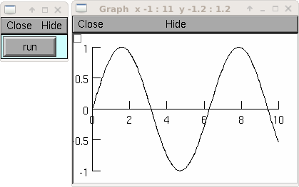
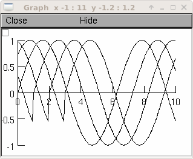
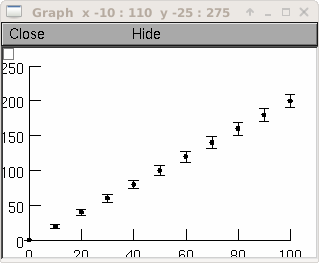
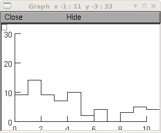
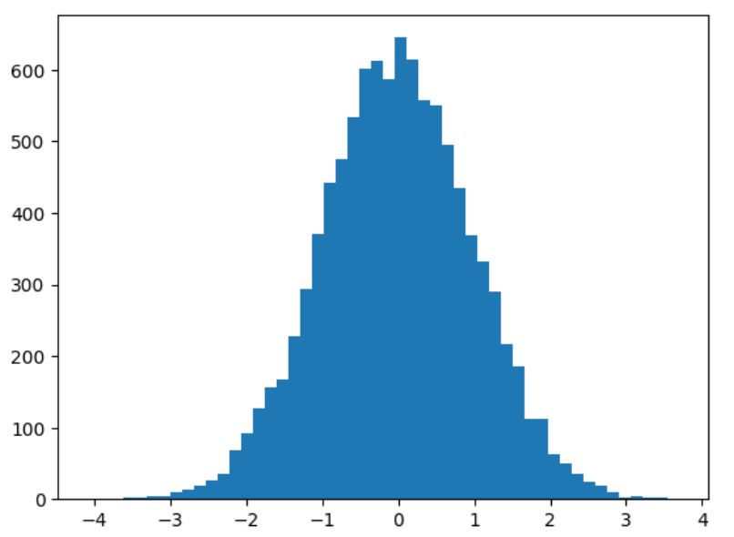
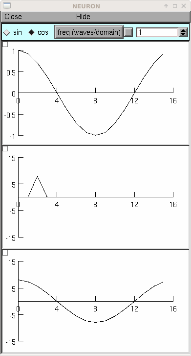
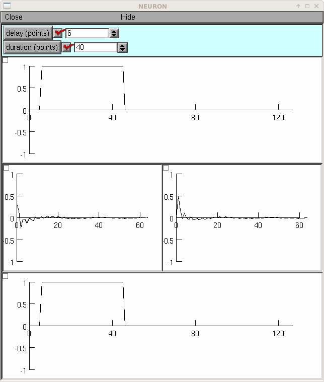
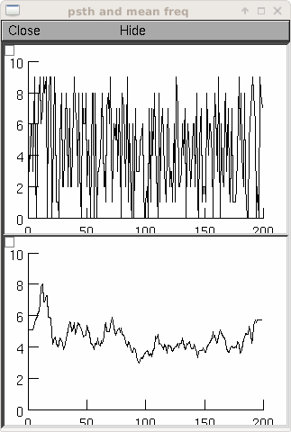

- Vector
- abs · add · addrand · append · apply · as_numpy · at · buffer_size · c · cl · contains · convlv · copy · correl · deriv · div · dot · eq · fft · fill · filter · fit · floor · fread · from_double · from_python · fwrite · get · hist · histogram · ind · index · indgen · indvwhere · indwhere · inf · insrt · integral · label · line · log · log10 · mag · mark · max · max_ind · mean · meansqerr · medfltr · median · min · min_ind · mul · play · play_remove · plot · ploterr · pow · printf · psth · rebin · record · reduce · remove · resample · resize · reverse · rotate · scale · scanf · scantil · set · setrand · sin · size · smhist · sort · sortindex · spctrm · spikebin · sqrt · stderr · stdev · sub · sum · sumgauss · sumsq · tanh · to_python · trigavg · var · vread · vwrite · where · x
Vector
- class Vector
This class was implemented by Zach Mainen and Michael Hines.
Syntax:
obj = n.Vector() obj = n.Vector(size) obj = n.Vector(size, init) obj = n.Vector(python_iterable)
Description:
NEURON’s Vector class provides functionality that is similar (and partly interchangeable) with a
numpyone-dimensional array of doubles. The reason for the continued use ofVectoris both due to back-compatibility and due to the many faster C-level extensions that have been written as NMODL programs that make use of this class.A
Vectoris itself an iterable and can be used in any context that takes an iterable, e.g.,for x in vec: print(x) [x for x in vec] np.array(vec) plt.plot(t_vec, v_vec)
A Vector object created with this class can be thought of as containing a one dimensional x array with elements of type float. The
objref[index]notation can be used to read and set Vector elements (setting requires NEURON 7.7+). An older syntaxobjref.x[index]works on all Python-supporting versions of NEURON.Beginning with NEURON 9.0 Vectors support slicing; e.g.:
vec = n.Vector([0, 1, 2, 3, 4, 5, 6, 7, 8]) new_vec = v[2:6]
will assign
new_vecto be aVectorcontaining the values [2, 3, 4, 5]vec[5:7] = [1, 2]
will update the values at indices 5,6 resulting in
vec = [0, 1, 2, 3, 4, 1, 2, 7, 8]A
Vectorcan be created with length size and with each element set to the value of init or can be created using a Python iterable.Vector methods that modify the elements are generally of the form
obj = vsrcdest.method(...)
in which the values of vsrcdest on entry to the method are used as source values by the method to compute values which replace the old values in vsrcdest. The return value is simply an additional reference to the same Vector.
Beginning with NEURON 7.7, Vectors support arithmetic operations; e.g. one can write
v1 = v2*s2 + v3*s3 + v4*s4.Note
In older code, you may see the use of the arithmetic functions add, mul, etc. Those functions changed the vectors they operated on, so to avoid this, the .c() method was used to create a new copy of a vector. The expression that can now be written
v1 = v2*s2 + v3*s3 + v4*s4using the older form would be written asv1 = v2.c().mul(s2).add(v3.c().mul(s3)).add(v4.c().mul(s4))
Examples:
vec = n.Vector(20, 5)
will create a vector with 20 indices, each having the value of 5.
vec1 = n.Vector()
will create a vector with 0 size. It is seldom necessary to specify a size for a Vector since most operations, if necessary, increase or decrease the number of elements as needed.
v = n.Vector([1, 2, 3])
will create a vector of length 3 whose entries are: 1, 2, and 3. The constructor takes any Python iterable. In particular, it also works with numpy arrays:
import numpy as np x = np.linspace(0, 2 * np.pi, 50) y = n.Vector(np.sin(x))
produces a vector
yof length 50 corresponding to the sine of evenly spaced points between 0 and 2 pi, inclusive.See also
This class was implemented by Zach Mainen and Michael Hines.
Syntax:
obj = new Vector() obj = new Vector(size) obj = new Vector(size, init)
- Description:
The
Vectorclass provides convenient functions for manipulating one-dimensional arrays of numbers. An object created with this class can be thought of as containing adouble x[]variable. Individual elements of this array can be manipulated with the normalobjref.x[index]notation. Most of theVectorfunctions apply their operations to each element of the x array thus avoiding the often tedious scaffolding required by an otherwise un-encapsulated double array.A vector can be created with length size and with each element set to the value of init.
Vector methods that modify the elements are generally of the form
obj = vsrcdest.method(...)
in which the values of vsrcdest on entry to the method are used as source values by the method to compute values which replace the old values in vsrcdest and the original vsrcdest object reference is the return value of the method. For example, v1 = v2 + v3 would be written,
v1 = v2.add(v3)
However, this results in two, often serious, side effects. First, the v2 elements are changed and so the original values are lost. Furthermore v1 at the end is a reference to the same Vector object pointed to by v2. That is, if you subsequently change the elements of v2, the elements of v1 will change as well since v1 and v2 are in fact labels for the same object.
When these side effects need to be avoided, one uses the Vector.c function which returns a reference to a completely new Vector which is an identical copy. ie.
v1 = v2.c.add(v3)
leaves v2 unchanged, and v1 points to a completely new Vector. One can build up elaborate vector expressions in this manner, ie v1 = v2*s2 + v3*s3 + v4*s4 could be written
v1 = v2.c.mul(s2).add(v3.c.mul(s3)).add(v4.c.mul(s4))
but if the expressions get too complex it is probably clearer to employ temporary objects to break the process into several separate expressions.
Examples:
objref vec vec = new Vector(20,5)
will create a vector with 20 indices, each having the value of 5.
objref vec1 vec1 = new Vector()
will create a vector with 1 index which has value of 0. It is seldom necessary to specify a size for a new vector since most operations, if necessary, increase or decrease the number of available elements as needed.
See also
double,
Vector.x,Vector.resize(),Vector.apply()This class was implemented by Zach Mainen and Michael Hines.
Syntax:
obj = n.Vector(); obj = n.Vector(size); obj = n.Vector(size, init); obj = n.Vector(python_iterable);
Description:
NEURON’s Vector class provides functionality that is similar (and partly interchangeable) with MATLAB’s one-dimensional array of doubles. The reason for the continued use of
Vectoris both due to back-compatibility and due to the many faster C-level extensions that have been written as NMODL programs that make use of this class.A
Vectorcan be used in any context that takes an array, e.g.,plot(t_vec, v_vec);
A Vector object created with this class can be thought of as containing a one dimensional x array with elements of type float. The
objref[index]notation can be used to read and set Vector elements (setting requires NEURON 7.7+).]A
Vectorcan be created with length size and with each element set to the value of init or can be created using a Python iterable.Vector methods that modify the elements are generally of the form
obj = vsrcdest.method(...);
in which the values of
vsrcdeston entry to the method are used as source values by the method to compute values which replace the old values invsrcdest. The return value is simply an additional reference to the same Vector.Examples:
vec = n.Vector(20, 5);
will create a vector with 20 indices, each having the value of 5.
vec1 = n.Vector();
will create a vector with 0 size. It is seldom necessary to specify a size for a Vector since most operations, if necessary, increase or decrease the number of elements as needed.
v = n.Vector([1, 2, 3]);
will create a vector of length 3 whose entries are: 1, 2, and 3. The constructor takes a 1D MATLAB array.
See also
- Vector.x
Syntax:
vec.x[index]
- Description:
Elements of a vector can be accessed with
vec.x[index]notation for either access or assignment. Vector indices range from 0 to len(Vector)-1 Vector contents can also be accessed withvec.get(index)or set withvec.set(index, value)This is not recommended for new code; use vec[index] instead.
- Example:
print(vec.x[0], vec[0])prints the value of the 0th (first) element twice.vec.x[i] = 3sets the i’th element to 3. Beginning with NEURON 7.7, it suffices to writevec[i] = 3instead.n.xpanel("show a field editor") n.xpvalue("last element", vec._ref_x[len(vec)-1]) n.xpanel()
Note, however, that there is a potential difficulty with the
xpvalue()field editor since, if vec is resized to be larger thanVector.buffer_size()a reallocation of the memory will cause the pointer to be invalid. In this case, the field editor will display the string, “Free’d”.
Warning
vec.x[-1]orvec[-1]return or set the value of the last element of the vector butvec._ref_xcannot be accessed in this way.Syntax:
vec.x[index]
Description:
Elements of a vector can be accessed with
vec.x[index]notation. Vector indices range from 0 to Vector.size()-1. This notation is superior to the oldervec.get()andvec.set()notations for three reasons:It performs the roles of both
vec.getandvec.setwith a syntax that is consistent with the normal syntax for adoublearray inside of an object.It can be viewed by a field editor (since it can appear on the left hand side of an assignment statement).
You can take its address for functions which require that kind of argument.
Example:
print vec.x[0]prints the value of the 0th (first) element.vec.x[i] = 3sets the i’th element to 3.xpanel("show a field editor") xvalue("vec.x[3]") xpvalue("last element", &vec.x[vec.size() - 1]) xpanel()Note, however, that there is a potential difficulty with the
xpvalue()field editor since, if vec is ever resized, then the pointer will be invalid. In this case, the field editor will display the string, “Free’d”.vec.x[-1]returns the value of the first element of the vector, just as wouldvec.x[0].vec.x(i)returns the value of index i just as doesvec.x[i].vec.x(i)is not supported in MATLAB. Instead, usevec(i)to access the i’th element of the vector.Warning
vec(i)is 1-indexed like all MATLAB arrays (i.e.,vec(1)is the first element of the Vector, notvec[0]as in Python and HOC).
- Vector.size()
Syntax:
size = vec.size()
- Description:
Deprecated in favor of
len(vec); note thatlen(vec) == vec.size()Return the number of elements in the vector. The last element has the index:vec.size() - 1which can be abbreviated using -1 as above.for i in range(vec.size()): print(vec[i])
Note
forloops can also use Vector as an iterablefor item in vec: print(item)
Note
There is a distinction between the size of a vector and the amount of memory allocated to hold the vector. Generally, memory is only freed and reallocated if the size needed is greater than the memory storage previously allocated to the vector. Thus the memory used by vectors tends to grow but not shrink. To reduce the memory used by a vector, one can explicitly call
Vector.buffer_size().See also
- Syntax:
size = vec.size()- Description:
Return the number of elements in the
Vector. The last element has the index:vec.size() - 1. Most explicit for loops over a vector can take the form:for i=0, vec.size()-1 {... vec.x[i] ...}
Note
There is a distinction between the size of a vector and the amount of memory allocated to hold the vector. Generally, memory is only freed and reallocated if the size needed is greater than the memory storage previously allocated to the vector. Thus the memory used by vectors tends to grow but not shrink. To reduce the memory used by a vector, one can explicitly call
buffer_size().See also
Syntax:
size = vec.size();
Description:
Returns the 2D size of the Vector. Since a Vector is a 1D array, the first dimension will always be 1.
Valid indices for a
Vectorare 1 tovec.size().numel = vec.size(); for i = 1:numel(2) disp(vec(i)); end
Note
If you want a one-dimensional way of seeing how large a
Vectoris, uselength(vec)instead ofvec.size().Note
There is a distinction between the size of a vector and the amount of memory allocated to hold the vector. Generally, memory is only freed and reallocated if the size needed is greater than the memory storage previously allocated to the vector. Thus the memory used by vectors tends to grow but not shrink. To reduce the memory used by a vector, one can explicitly call
buffer_size().See also
- Vector.resize()
Syntax:
obj = vsrcdest.resize(new_size)
- Description:
Resize the
Vector. If theVectoris made smaller, then trailing elements will be zeroed. If it is expanded, the new elements will be initialized to 0.0; original elements will remain unchanged.
Warning
Any function that resizes the
Vectorto a larger size than its available space will reallocate and thereby make existing pointers to the elements invalid (see note inVector.size()). For example, resizing Vectors that have been plotted will remove that Vector from the plot list. Other functions may not be so forgiving and result in a memory error (segmentation violation or unhandled exception).References created in MATLAB via
vec.ref(i)may continue to be used from MATLAB as they will always point to the correct element even if theVectoris resized, however no guarantee is made for how the rest of NEURON interprets references that they had previously received from MATLAB after a resize.Example:
vec = n.Vector(20, 5) vec.resize(30) # Appends 10 elements, each having a value of 0 vec.printf() vec.resize(10) # removes the last 20 elements; values of the first 10 elements are unchanged
Syntax:
obj = vsrcdest.resize(new_size)
- Description:
Resize the
Vector. If theVectoris made smaller, then trailing elements will be zeroed. If it is expanded, the new elements will be initialized to 0.0; original elements will remain unchanged.
Warning
Any function that resizes the
Vectorto a larger size than its available space will reallocate and thereby make existing pointers to the elements invalid (see note inVector.size()). For example, resizing Vectors that have been plotted will remove that Vector from the plot list. Other functions may not be so forgiving and result in a memory error (segmentation violation or unhandled exception).References created in MATLAB via
vec.ref(i)may continue to be used from MATLAB as they will always point to the correct element even if theVectoris resized, however no guarantee is made for how the rest of NEURON interprets references that they had previously received from MATLAB after a resize.Example:
objref vec vec = new Vector(20, 5) vec.resize(30) // Appends 10 elements, each having a value of 0 vec.printf() vec.resize(10) // removes the last 20 elements; values of the first 10 elements are unchanged
See also
Syntax:
obj = vsrcdest.resize(new_size);
- Description:
Resize the
Vector. If theVectoris made smaller, then trailing elements will be zeroed. If it is expanded, the new elements will be initialized to 0.0; original elements will remain unchanged.
Warning
Any function that resizes the
Vectorto a larger size than its available space will reallocate and thereby make existing pointers to the elements invalid (see note inVector.size()). For example, resizing Vectors that have been plotted will remove that Vector from the plot list. Other functions may not be so forgiving and result in a memory error (segmentation violation or unhandled exception).References created in MATLAB via
vec.ref(i)may continue to be used from MATLAB as they will always point to the correct element even if theVectoris resized, however no guarantee is made for how the rest of NEURON interprets references that they had previously received from MATLAB after a resize.Example:
vec = n.Vector(20, 5); vec.resize(30); # Appends 10 elements, each having a value of 0 vec.printf(); vec.resize(10); # removes the last 20 elements; values of the first 10 elements are unchanged
- Vector.buffer_size()
Syntax:
space = vsrc.buffer_size() space = vsrc.buffer_size(request)
- Description:
Returns the length of the double precision array memory allocated to hold the vector. This is NOT the size of the vector. The vector size can efficiently grow up to this value without reallocating memory.
With an argument, frees the old memory space and allocates new memory space for the vector, copying old element values to the new elements. If the request is less than the size, the size is truncated to the request. For vectors that grow continuously, it may be more efficient to allocate enough space at the outset, or else occasionally change the buffer_size by larger chunks. It is not necessary to worry about the efficiency of growth during a
Vector.record`()since the space available automatically increases by doubling.
Example:
y = n.Vector(10) print(len(y)) print(y.buffer_size()) y.resize(5) print(len(y)) print(y.buffer_size()) print(y.buffer_size(100)) print(len(y))
Syntax:
space = vsrc.buffer_size() space = vsrc.buffer_size(request)
- Description:
Returns the length of the double precision array memory allocated to hold the vector. This is NOT the size of the vector. The vector size can efficiently grow up to this value without reallocating memory.
With an argument, frees the old memory space and allocates new memory space for the vector, copying old element values to the new elements. If the request is less than the size, the size is truncated to the request. For vectors that grow continuously, it may be more efficient to allocate enough space at the outset, or else occasionally change the buffer_size by larger chunks. It is not necessary to worry about the efficiency of growth during a Vector.record since the space available automatically increases by doubling.
Example:
objref y y = new Vector(10) y.size() y.buffer_size() y.resize(5) y.size y.buffer_size() y.buffer_size(100) y.size()
Syntax:
space = vsrc.buffer_size(); space = vsrc.buffer_size(request);
- Description:
Returns the length of the double precision array memory allocated to hold the vector. This is NOT the size of the vector. The vector size can efficiently grow up to this value without reallocating memory.
With an argument, frees the old memory space and allocates new memory space for the vector, copying old element values to the new elements. If the request is less than the size, the size is truncated to the request. For vectors that grow continuously, it may be more efficient to allocate enough space at the outset, or else occasionally change the buffer_size by larger chunks. It is not necessary to worry about the efficiency of growth during a
Vector.record`()since the space available automatically increases by doubling.
Example:
y = n.Vector(10); disp(length(y)); disp(y.buffer_size()); y.resize(5); disp(length(y)); disp(y.buffer_size()); disp(y.buffer_size(100)); disp(length(y));
- Vector.get()
Syntax:
x = vec.get(index)
- Description:
Return the value of a Vector element index.
It is simpler in Python to write
x = vec[index]instead.
Syntax:
x = vec.get(index)
Description:
Return the value of a vector element index. This function is superseded by the
vec.x[]notation but is retained for backward compatibility.That is, the following two lines are equivalent:
value = vec.get(index) value = vec.x[index]
Syntax:
x = vec.get(index);
- Description:
Return the value of a Vector element index.
It is simpler in MATLAB to write
x = vec(index)instead.
Note
Vector.getis 1-based in MATLAB, but 0-based in Python and HOC. That is, if translating code from Python or HOC to MATLAB, remember to add 1 to the index.
- Vector.set()
Syntax:
obj = vec.set(index, value)
Description:
Set vector element index to value. Equivalent to
vec[i] = valuenotation.Syntax:
obj = vec.set(index, value)
Description:
Set vector element index to value. This function is superseded by the
vec.x[i] = exprnotation but is retained for backward compatibility.Syntax:
obj = vec.set(index, value);
Description:
Set vector element index to value. Equivalent to
vec(index) = valuenotation.Note
Vector.setis 1-based in MATLAB, but 0-based in Python and HOC. That is, if translating code from Python or HOC to MATLAB, remember to add 1 to the index.
- Vector.fill()
Syntax:
obj = vsrcdest.fill(value) obj = vsrcdest.fill(value, start, end)
- Description:
The first form assigns value to every element in vsrcdest.
If start and end arguments are present, they specify the index range for the assignment.
Example:
vec = n.Vector(20, 5) vec.fill(9, 2, 7)
assigns 9 to
vec[2]throughvec[7](a total of 6 = 7 - 2 + 1 elements)An alternative to the last line using regular Python syntax would be to use slicing: .. code-block:
python vec[2:8] = [9] * 6
(The slice index is 2:8 because the beginning is included but the end is not.)
See also
Syntax:
obj = vsrcdest.fill(value) obj = vsrcdest.fill(value, start, end)
- Description:
The first form assigns value to every element in vsrcdest.
If start and end arguments are present, they specify the index range for the assignment.
Example:
objref vec vec = new Vector(20,5) vec.fill(9,2,7)
assigns 9 to vec.x[2] through vec.x[7] (a total of 6 elements)
See also
Syntax:
obj = vsrcdest.fill(value); obj = vsrcdest.fill(value, start, stop);
- Description:
The first form assigns value to every element in vsrcdest.
If start and stop arguments are present, they specify the index range for the assignment.
Example:
vec = n.Vector(20, 5); vec.fill(9, 3, 8);
assigns 9 to
vec(3)throughvec(8)(a total of 6 = 8 - 3 + 1 elements)Note
Vector.fillis 1-based in MATLAB, but 0-based in Python and HOC. That is, if translating code from Python or HOC to MATLAB, remember to add 1 to the index.See also
- Vector.label()
Syntax:
s = vec.label() s = vec.label(str_type)
Description:
Label the vector with a string. The return value is the label, which is an empty string if no label has been set. Labels are printed on a Graph when the
Graph.plot()method is called.Example:
from neuron import n vec = n.Vector() print(vec.label()) vec.label("hello") print(vec.label())
See also
Syntax:
strdef s s = vec.label() s = vec.label(s)
Description:
Label the vector with a string. The return value is the label, which is an empty string if there is no label. Labels are printed on a Graph when the
Graph.plot()method is called.Example:
objref vec vec = new Vector() print vec.label() vec.label("hello") print vec.label()
See also
Syntax:
s = vec.label(); s = vec.label(str_type);
Description:
Label the vector with a string. The return value is the label, which is an empty string if no label has been set. Labels are printed on a Graph when the
Graph.plot()method is called.Example:
n = neuron.launch(); vec = n.Vector(); disp(vec.label()); vec.label('hello'); disp(vec.label());
See also
- Vector.record()
Syntax:
vdest = vdest.record(var_reference) vdest = vdest.record(var_reference, Dt) vdest = vdest.record(var_reference, tvec) vdest = vdest.record(point_process_object, var_reference, ...)
- Description:
Save the stream of values of “var” during a simulation into the
vdestvector. Previous record and play specifications of thisVector(if any) are destroyed.Details:
NEURON pointers in python are handled using the
_ref_syntax. e.g.,soma(0.5)._ref_v
To save a scalar from NEURON that scalar must exist in NEURON’s scope.
Transfers take place on exit from
finitialize()and on exit fromfadvance(). At the end offinitialize(),v[0] = var. At the end offadvance(), var will be saved ift(after being incremented byfadvance()) is equal or greater than the associated time of the next index. The system maintains a set of record vectors and the vector will be removed from the list if the vector or var is destroyed. The vector is automatically increased in size by 100 elements at a time if more space is required, so efficiency will be slightly improved if one creates vectors with sufficient size to hold the entire stream, and plots will be more persistent (recall that resizing may cause reallocation of memory to hold elements and this will make pointers invalid).The record semantics can be thought of as:
var(t) -> v[index]The default relationship between
indexandtist = index*dt.In the second form,
t = index*Dt.In the third form,
t = tvec[index].For the local variable timestep method,
CVode.use_local_dt()and/or multiple threads,ParallelContext.nthread(), it is often helpful to provide specific information about which cell the var pointer is associated with by inserting as the first arg some POINT_PROCESS object which is located on the cell. This is necessary if the pointer is not a RANGE variable and is much more efficient if it is. The fixed step and global variable time step method do not need or use this information for the local step method but will use it for multiple threads. It is therefore a good idea to supply it if possible.Prior to version 7.7, the record method returned 1.0 .
Warning
record/play behavior is reasonable but surprising if
dtis greater thanDt. Things work best ifDthappens to be a multiple ofdt. All combinations of record ; play ;Dt =>< dt; and tvec sequences have not been tested.Example:
If NEURON has loaded its standard run library, the time course of membrane potential in the
middle of a section called “terminal” can be captured to a vector called dv by
dv = n.Vector().record(terminal(0.5)._ref_v) n.run()
Note that the next “run” will overwrite the previous time course stored in the vector as it automatically performs an “init” before running a simulation.
- Thus dv should be copied to another vector ( see
copy()). To remove dv from the list of record vectors, the easiest method is to destroy the instance with
dv = n.Vector()Any of the following makes NEURON load its standard run library:
starting NEURON by executing nrngui -python
executing any of the following statements:
from neuron import gui # also brings up the NEURON Main Menu
n.load_file(“noload.hoc”) # does not bring up the NEURON Main Menu
n.load_file(“stdrun.hoc”) # does not bring up the NEURON Main Menu
See also
- Syntax:
vdest.record(&var)vdest.record(&var, Dt)vdest.record(&var, tvec)vdest.record(point_process_object, &varvar, ...)- Description:
Save the stream of values of “var” during a simulation into the vdest vector. Previous record and play specifications of this Vector (if any) are destroyed.
Details: Transfers take place on exit from
finitialize()and on exit fromfadvance(). At the end offinitialize(),v.x[0] = var. At the end offadvance, var will be saved ift(after being incremented byfadvance()) is equal or greater than the associated time of the next index. The system maintains a set of record vectors and the vector will be removed from the list if the vector or var is destroyed. The vector is automatically increased in size by 100 elements at a time if more space is required, so efficiency will be slightly improved if one creates vectors with sufficient size to hold the entire stream, and plots will be more persistent (recall that resizing may cause reallocation of memory to hold elements and this will make pointers invalid).The record semantics can be thought of as:
var(t) -> v.x[index]The default relationship between
indexandtist = index*dt.In the second form,
t = index*Dt.In the third form,
t = tvec.x[index].For the local variable timestep method,
CVode.use_local_dt()and/or multiple threads,ParallelContext.nthread(), it is often helpful to provide specific information about which cell the var pointer is associated with by inserting as the first arg some POINT_PROCESS object which is located on the cell. This is necessary if the pointer is not a RANGE variable and is much more efficient if it is. The fixed step and global variable time step method do not need or use this information for the local step method but will use it for multiple threads. It is therefore a good idea to supply it if possible.
Warning
record/play behavior is reasonable but surprising if
dtis greater thanDt. Things work best ifDthappens to be a multiple ofdt. All combinations of record ; play ;Dt =>< dt; and tvec sequences have not been tested.- Example:
See
tests/nrniv/vrecord.hocfor examples of usage.If NEURON has loaded its standard run library, the time course of membrane potential in the middle of a section called “terminal” can be captured to a Vector called dv by
objref dv dv = new Vector() dv.record(&terminal.v(0.5)) run()
Note that the next “run” will overwrite the previous time course stored in the vector as it automatically performs an init() before running the
- simulation. Thus dv should be copied to another vector ( see
copy()). To remove dv from the list of record vectors, the easiest method is to destroy the instance with
dv = new Vector()Any of the following makes NEURON load its standard run library:
- starting NEURON by executing nrngui
executing any of the following statements:
load_file(“nrngui.hoc”) // also brings up the NEURON Main Menu
load_file(“noload.hoc”) // does not bring up the NEURON Main Menu
load_file(“stdrun.hoc”) // does not bring up the NEURON Main Menu
See also
- Vector.play()
Syntax:
vdest = vsrc.play(var_reference, Dt) vdest = vsrc.play(var_reference, tvec) vdest = vsrc.play(index) vdest = vsrc.play(var_reference or stmt, tvec, continuous) vdest = vsrc.play(var_reference or stmt, tvec, indices_of_discontinuities_vector) vdest = vsrc.play(point_process_object, var_reference, ...)
- Description:
The
vsrcvector values are assigned to the “var” variable during a simulation.The same vector can be played into different variables.
The index form immediately sets the var (or executes the stmt) with the value of vsrc[index]
The play semantics can be thought of as
v[index] -> var(t)where t(index) is Dt*index or tvec[index] The discrete event delivery system is used to determine the precise time at which values are copied from vsrc to var. Note that for variable step methods, unless continuity is specifically requested, the function is a step function. Also, for the local variable dt method, var MUST be associated with the cell that contains the section accessed via sec=sec in the arg list (but see the paragraph below about the use of a point_process_object inserted as the first arg).For the fixed step method, transfers take place on entry to
finitialize()and on entry tofadvance(). At the beginning offinitialize(),var = v[0]. Onfadvance()a transfer will take place if t will be equal or greater than the associated time of the next index after thefadvanceincrement.For the variable step methods, transfers take place exactly at the times specified by the Dt or tvec arguments.
The system maintains a set of play vectors and the vector will be removed from the list if the vector or var is destroyed. If the end of the vector is reached, no further transfers are made (
varbecomes constant)Note well: for the fixed step method, if
fadvanceexits with time equal tot(ie enters at time t-dt), then on entry tofadvance, var is set equal to the value of the vector at the index appropriate to time t. Execute tests/nrniv/vrecord.py to see what this implies during a simulation. ie the value of var fromt-dtto t played into by a vector is equal to the value of the vector atindex(t). If the vector was meant to serve as a continuous stimulus function, this results in a first order correct simulation with respect to dt. If a second order correct simulation is desired, it is necessary (though perhaps not sufficient since all other equations in the system must also be solved using methods at least second order correct) to fill the vector with function values at f((i-.5)*dt).When continuous is 1 then linear interpolation is used to define the values between time points. However, events at each Dt or tvec are still used and that has beneficial performance implications for variable step methods since vsrc is equivalent to a piecewise linear function and variable step methods can excessively reduce dt as one approaches a discontinuity in the first derivative. Note that if there are discontinuities in the function itself, then tvec should have adjacent elements with the same time value. When a value is greater than the range of the t vector, linear extrapolation of the last two points is used instead of a constant last value. If a constant outside the range is desired, make sure the last two points have the same y value and have different t values (if the last two values are at the same time, the constant average will be returned).
The
indices_of_discontinuities_vectorargument is used to specify the indices in tvec of the times at which discrete events should be used to notify that a discontinuity in the function, or any derivative of the function, occurs. Presently, linear interpolation is used to determine var(t) in the interval between these discontinuities (instead of cubic spline) so the length of steps used by variable step methods near the breakpoints depends on the details of how the parameter being played into affects the states.For the local variable timestep method,
CVode.use_local_dt()and/or multiple threads,ParallelContext.nthread(), it is often helpful to provide specific information about which cell the var pointer is associated with by inserting as the first arg some POINT_PROCESS object which is located on the cell. This is necessary if the pointer is not a RANGE variable and is much more efficient if it is. The fixed step and global variable time step method do not need or use this information for the local step method but will use it for multiple threads. It is therefore a good idea to supply it if possible.Prior to version 7.7, the play method returned 1.0 .
See also
Example of playing into an
IClampfor varying current:from neuron import n import pylab as plt, numpy as np n.load_file('stdrun.hoc') sec = n.Section('sec') sec.insert(n.pas) inp = np.zeros(500) inp[50:250] = 1 pvec = n.Vector(inp) stim = n.IClamp(sec(0.5)) stim.dur = 1e9 pvec.play(stim, stim._ref_amp, True) rd = {k:n.Vector().record(v) for k,v in zip(['t', 'v', 'stim_i', 'amp'], [n._ref_t, sec(0.5)._ref_v, stim._ref_i, stim._ref_amp])} n.v_init, n.tstop= -70, 500 n.run() plt.plot(rd['t'], rd['v']) plt.show()
Example of playing into a segment’s ina:
from neuron import n, gui import numpy as np # create a geometry soma = n.Section('soma') # insert variables for sodium ions soma.insert(n.na_ion) # driving stimulus t = n.Vector(np.linspace(0, 2 * np.pi, 50)) y = n.Vector(np.sin(t)) # play the stimulus into soma(0.5)'s ina # the last True means to interpolate; it's not the default, but unless # you know what you're doing, you probably want to pass True there y.play(soma(0.5)._ref_ina, t, True) # setup a graph g = n.Graph() g.addvar("ina", soma(0.5)._ref_ina) g.size(0, 6.28, -1, 1) n.graphList[0].append(g) # run the simulation n.finitialize(-65) n.continuerun(6.28)
A runnable example of using this method for a time-varying current clamp is available here.
- Syntax:
vsrc.play(&var, Dt)vsrc.play(&var, tvec)vsrc.play("stmt involving $1", optional Dt or tvec arg)vsrc.play(index)vsrc.play(&var or stmt, tvec, continuous)vsrc.play(&var or stmt, tvec, indices_of_discontinuities_vector)vsrc.play(point_process_object, &var, ...)- Description:
The
vsrcvector values are assigned to the “var” variable during a simulation.The same vector can be played into different variables.
If the “stmt involving $1” form is used, that statement is executed with the appropriate value of the $1 arg. This is not as efficient as the pointer form but is useful for playing a value into a set of variables as in
forall g_pas = $1
The index form immediately sets the var (or executes the stmt) with the value of vsrc.x[index]
The play semantics can be thought of as
v.x[index] -> var(t)where t(index) is Dt*index or tvec.x[index] The discrete event delivery system is used to determine the precise time at which values are copied from vsrc to var. Note that for variable step methods, unless continuity is specifically requested, the function is a step function. Also, for the local variable dt method, var MUST be associated with the cell that contains the currently accessed section (but see the paragraph below about the use of a point_process_object inserted as the first arg).For the fixed step method transfers take place on entry to
finitialize()and on entry tofadvance(). At the beginning offinitialize(),var = v.x[0]. Onfadvance()a transfer will take place if t will be (after thefadvanceincrement) equal or greater than the associated time of the next index. For the variable step methods, transfers take place exactly at the times specified by the Dt or tvec arguments.The system maintains a set of play vectors and the vector will be removed from the list if the vector or var is destroyed. If the end of the vector is reached, no further transfers are made (
varbecomes constant)Note well: for the fixed step method, if
fadvanceexits with time equal tot(ie enters at time t-dt), then on entry tofadvance, var is set equal to the value of the vector at the index appropriate to time t. Execute tests/nrniv/vrecord.hoc to see what this implies during a simulation. ie the value of var fromt-dtto t played into by a vector is equal to the value of the vector atindex(t). If the vector was meant to serve as a continuous stimulus function, this results in a first order correct simulation with respect to dt. If a second order correct simulation is desired, it is necessary (though perhaps not sufficient since all other equations in the system must also be solved using methods at least second order correct) to fill the vector with function values at f((i-.5)*dt).When continuous is 1 then linear interpolation is used to define the values between time points. However, events at each Dt or tvec are still used and that has beneficial performance implications for variable step methods since vsrc is equivalent to a piecewise linear function and variable step methods can excessively reduce dt as one approaches a discontinuity in the first derivative. Note that if there are discontinuities in the function itself, then tvec should have adjacent elements with the same time value. As of version 6.2, when a value is greater than the range of the t vector, linear extrapolation of the last two points is used instead of a constant last value. If a constant outside the range is desired, make sure the last two points have the same y value and have different t values (if the last two values are at the same time, the constant average will be returned). (note: the 6.2 change allows greater variable time step efficiency as one approaches discontinuities.)
The indices_of_discontinuities_vector argument is used to specifying the indices in tvec of the times at which discrete events should be used to notify that a discontinuity in the function, or any derivative of the function, occurs. Presently, linear interpolation is used to determine var(t) in the interval between these discontinuities (instead of cubic spline) so the length of steps used by variable step methods near the breakpoints depends on the details of how the parameter being played into affects the states.
For the local variable timestep method,
CVode.use_local_dt()and/or multiple threads,ParallelContext.nthread(), it is often helpful to provide specific information about which cell the var pointer is associated with by inserting as the first arg some POINT_PROCESS object which is located on the cell. This is necessary if the pointer is not a RANGE variable and is much more efficient if it is. The fixed step and global variable time step method do not need or use this information for the local step method but will use it for multiple threads. It is therefore a good idea to supply it if possible.
See also
- Vector.play_remove()
Syntax:
v.play_remove()
- Description:
Removes the vector from BOTH record and play lists. Note that the vector is automatically removed if the variable which is recorded or played is destroyed or if the vector is destroyed. This function is used in those cases where one wishes to keep the vector data even under subsequent runs.
See also
- Syntax:
v.play_remove()- Description:
Removes the vector from BOTH record and play lists. Note that the vector is automatically removed if the variable which is recorded or played is destroyed or if the vector is destroyed. This function is used in those cases where one wishes to keep the vector data even under subsequent runs.
record and play have been implemented by Michael Hines.
See also
- Vector.indgen()
Syntax:
obj = vsrcdest.indgen() obj = vsrcdest.indgen(stepsize) obj = vsrcdest.indgen(start, stepsize) obj = vsrcdest.indgen(start, stop, stepsize)
- Description:
Fill the elements of a vector with a sequence of values. With no arguments, the sequence is integers from 0 to (size-1).
With only stepsize passed, the sequence goes from 0 to stepsize**(size-1) in steps of *stepsize. Stepsize does not have to be an integer.
With start, stop and stepsize, the vector is resized to be 1 + (stop - $varstart)/stepsize long and the sequence goes from start up to and including stop in increments of stepsize.
Example:
vec = n.Vector(100) vec.indgen(5)
creates a vector with 100 elements going from 0 to 495 in increments of 5.
vec.indgen(50, 100, 10)
reduces the vector to 6 elements going from 50 to 100 in increments of 10.
vec.indgen(90, 1000, 30)
expands the vector to 31 elements going from 90 to 990 in increments of 30. This is roughly equivalent to the Python code:
vec = n.Vector(range(90, 1000, 30))
In this case,
rangereturns a generator and is very memory-efficient. By contrast, if we usednp.arange, that would create anumpyarray which would then be copied over to a newVectorobject. In most cases, readability is a bigger concern than memory and time efficiency, but you must decide for yourself which is more important.See also
- Syntax:
obj = vsrcdest.indgen()obj = vsrcdest.indgen(stepsize)obj = vsrcdest.indgen(start,stepsize)obj = vsrcdest.indgen(start,stop,stepsize)- Description:
Fill the elements of a vector with a sequence of values. With no arguments, the sequence is integers from 0 to (size-1).
With only stepsize passed, the sequence goes from 0 to stepsize**(size-1) in steps of *stepsize. Stepsize does not have to be an integer.
With start, stop and stepsize, the vector is resized to be 1 + (stop - $varstart)/stepsize long and the sequence goes from start up to and including stop in increments of stepsize.
Example:
objref vec vec = new Vector(100) vec.indgen(5)
creates a vector with 100 elements going from 0 to 495 in increments of 5.
vec.indgen(50, 100, 10)
reduces the vector to 6 elements going from 50 to 100 in increments of 10.
vec.indgen(90, 1000, 30)
expands the vector to 31 elements going from 90 to 990 in increments of 30.
See also
- Vector.append()
Syntax:
obj = vsrcdest.append(vec1, vec2, ...)
- Description:
Concatenate values onto the end of a vector. The arguments may be either scalars or vectors. The values are appended to the end of the
vsrcdestvector.
Example:
vec = n.Vector(10,4) vec1 = n.Vector(10,5) vec2 = n.Vector(10,6) vec.append(vec1, vec2, 7, 8, 9) vec.append(n.Vector([4,1,2,7]))
turns
vecinto a 37 element vector, whose first ten elements = 4, whose second ten elements = 5, whose third ten elements = 6, and whose 31st, 32nd, and 33rd elements = 7, 8, and 9, and 34-37 are 4,1,2,7. Note that the Vector created to pass the Python list into append is immediately discarded. Remember, index 32 refers to the 33rd element.- Syntax:
obj = vsrcdest.append(vec1, vec2, ...)- Description:
Concatenate values onto the end of a vector. The arguments may be either scalars or vectors. The values are appended to the end of the
vsrcdestvector.
Example:
objref vec, vec1, vec2 vec = new Vector (10,4) vec1 = new Vector (10,5) vec2 = new Vector (10,6) vec.append(vec1, vec2, 7, 8, 9)
turns
vecinto a 33 element vector, whose first ten elements = 4, whose second ten elements = 5, whose third ten elements = 6, and whose 31st, 32nd, and 33rd elements = 7, 8, and 9, respectively. Remember, index 32 refers to the 33rd element.
- Vector.insrt()
Syntax:
obj = vsrcdest.insrt(index, vec1, vec2, ...)
- Description:
Inserts values before the index element. The arguments may be either scalars or vectors.
obj.insrt(obj.size, ...)is equivalent toobj.append(...)
- Syntax:
obj = vsrcdest.insrt(index, vec1, vec2, ...)- Description:
Inserts values before the index element. The arguments may be either scalars or vectors.
obj.insrt(obj.size, ...)is equivalent toobj.append(...)
- Vector.remove()
Syntax:
obj = vsrcdest.remove(index) obj = vsrcdest.remove(start, end)
- Description:
Remove the indexed element (or inclusive range) from the vector. The vector is resized.
- Syntax:
obj = vsrcdest.remove(index)obj = vsrcdest.remove(start, end)- Description:
Remove the indexed element (or inclusive range) from the vector. The vector is resized.
- Vector.contains()
Syntax:
numerical_truth_value = vsrc.contains(value)
- Description:
Return whether or not the vector contains value as at least one of its elements (to within
float_epsilon). It returns True if the value is found; otherwise
it returns False. (In NEURON 7.5 and before, this method returned 1 or 0 instead of True or False, respectively.)
Example:
vec = n.Vector(range(0, 49, 5)) vec.contains(30)
returns True, meaning the
Vectordoes contain an element whose value is 30.vec.contains(50)
returns False. The vector does not contain an element whose value is 50.
Note
An n.Vector is a Python iterable, so you can also use Python’s
inkeyword:5 in n.Vector([1, 5])returnsTrue.- Syntax:
boolean = vsrc.contains(value)- Description:
Return whether or not the vector contains value as at least one of its elements (to within
float_epsilon). A return value of 1 signifies true; 0 signifies false.
Example:
vec = new Vector(10) vec.indgen(5) vec.contains(30)
returns a 1, meaning the vector does contain an element whose value is 30.
vec.contains(50)
returns a 0. The vector does not contain an element whose value is 50.
- Vector.copy()
Syntax:
obj = vdest.copy(vsrc) obj = vdest.copy(vsrc, dest_start) obj = vdest.copy(vsrc, src_start, src_end) obj = vdest.copy(vsrc, dest_start, src_start, src_end) obj = vdest.copy(vsrc, dest_start, src_start, src_end, dest_inc, src_inc) obj = vdest.copy(vsrc, vsrcdestindex) obj = vdest.copy(vsrc, vsrcindex, vdestindex)
- Description:
Copies some or all of
vsrcintovdest. This function can be slightly more efficient than slicing orVector.c()since if vdest contains enough space, memory will not have to be allocated for it. Also it is convenient for those cases in whichvdestis being plotted and therefore reallocation of memory (with consequent removal of vdest from the Graph) is to be explicitly avoided.If the
dest_startargument is present (an integer index), source elements (beginning atsrc[0]) are copied tovdestbeginning atdest[dest_start],src_startandsrc_endhere refer to indices ofvsrc, notvdest. Ifvdestis too small for the size required byvsrcand the arguments, then it is resized to hold the data. If thedestis larger than required AND there is more than one argument thedestis NOT resized. One may use -1 for the src_end argument to specify the entire size (instead of the tediouslen(src)-1)If the second (and third) argument is a
Vector, the elements of thatVectorare the indices of thevsrcto be copied to the same indices of thevdest. In this case, thevdestis not resized and any indices that are out of range of eithervsrcorvdestare ignored. This function allows mapping of a subset of a source vector into the subset of a destination vector.- Example:
To copy the odd elements use:
v1 = n.Vector(range(30)) v1.printf() v2 = n.Vector() v2.copy(v1, 0, 1, -1, 1, 2) v2.printf()
To merge or shuffle two vectors into a third, use:
v1 = n.Vector(range(15)) v1.printf() v2 = n.Vector(range(0, 150, 10)) v2.printf() v3 = n.Vector() v3.copy(v1, 0, 0, -1, 2, 1) v3.copy(v2, 1, 0, -1, 2, 1) v3.printf()
Example:
vec = n.Vector(100, 10) vec1 = n.Vector(range(5, 110, 10)) vec.copy(vec1, 50, 3, 6)
turns
vecfrom a 100 element into a 54 element vector. The first 50 elements will each have the value 10 and the last four will have the values 35, 45, 55, and 65 respectively.Warning
Vectors copied to themselves are not usually what is expected. eg.
vec = n.Vector(range(20)) vec.copy(vec, 10)
produces a 30 element vector cycling three times from 0 to 9. However the self copy may work if the src index is always greater than or equal to the destination index.
- Syntax:
obj = vdest.copy(vsrc)obj = vdest.copy(vsrc, dest_start)obj = vdest.copy(vsrc, src_start, src_end)obj = vdest.copy(vsrc, dest_start, src_start, src_end)obj = vdest.copy(vsrc, dest_start, src_start, src_end, dest_inc, src_inc)obj = vdest.copy(vsrc, vsrcdestindex)obj = vdest.copy(vsrc, vsrcindex, vdestindex)- Description:
Copies some or all of vsrc into vdest. If the dest_start argument is present (an integer index), source elements (beginning at src*``.x[0]``) are copied to *vdest beginning at dest*``.x[dest_start]``, *Src_start and src_end here refer to indices of vsrcx, not vdest. If vdest is too small for the size required by vsrc and the arguments, then it is resized to hold the data. If the dest is larger than required AND there is more than one argument the dest is NOT resized. One may use -1 for the src_end argument to specify the entire size (instead of the tedious
src.size()-1)If the second (and third) argument is a vector, the elements of that vector are the indices of the vsrc to be copied to the same indices of the vdest. In this case the vdest is not resized and any indices that are out of range of either vsrc or vdest are ignored. This function allows mapping of a subset of a source vector into the subset of a destination vector.
This function can be slightly more efficient than
c()since if vdest contains enough space, memory will not have to be allocated for it. Also it is convenient for those cases in which vdest is being plotted and therefore reallocation of memory (with consequent removal of vdest from the Graph) is to be explicitly avoided.- Example:
To copy the odd elements use:
objref v1, v2 v1 = new Vector(30) v1.indgen() v1.printf() @code... v2 = new Vector() v2.copy(v1, 0, 1, -1, 1, 2) v2.printf()
To merge or shuffle two vectors into a third, use:
objref v1, v2, v3 v1 = new Vector(15) v1.indgen() v1.printf() v2 = new Vector(15) v2.indgen(10) v2.printf() @code... v3 = new Vector() v3.copy(v1, 0, 0, -1, 2, 1) v3.copy(v2, 1, 0, -1, 2, 1) v3.printf
Example:
vec = new Vector(100,10) vec1 = new Vector() vec1.indgen(5,105,10) vec.copy(vec1, 50, 3, 6)
turns
vecfrom a 100 element into a 54 element vector. The first 50 elements will each have the value 10 and the last four will have the values 35, 45, 55, and 65 respectively.Warning
Vectors copied to themselves are not usually what is expected. eg.
vec = new Vector(20) vec.indgen() vec.copy(vec, 10)
produces a 30 element vector cycling three times from 0 to 9. However the self copy may work if the src index is always greater than or equal to the destination index.
- Vector.c()
Syntax:
newvec = vsrc.c() newvec = vsrc.c(srcstart) newvec = vsrc.c(srcstart, srcend)
- Description:
Return a new
n.Vectorwhich is a copy of thevsrcVector, but does not copy the label. For a complete copy including the label useVector.cl(). (Identical to theVector.at()function but has a short name that suggests copy or clone). Useful in the construction of filter chains.In versions of NEURON before 7.7, this was often used in building Vectors from other Vectors, e.g.
vec2 = vec1.c().add(1); in new code, it is recommended to use the shorter equivalentvec2 = vec1 + 1.The three syntaxes shown above are equivalent to the following slices: *
newvec = vsrc[:]*newvec = vsrc[srcstart:]*newvec = vsrc[srcstart:srcend + 1]In particular, slices are copies (not views) into a
Vectorand thesrcendargument is included when using the.cmethod.
- Syntax:
newvec = vsrc.cnewvec = vsrc.c(srcstart)newvec = vsrc.c(srcstart, srcend)- Description:
Return a new vector which is a copy of the vsrc vector, but does not copy the label. For a complete copy including the label use
Vector.cl(). (Identical to theVector.at()function but has a short name that suggests copy or clone). Useful in the construction of filter chains. Note that with no arguments, it is not necessary to type the parentheses.
- Vector.cl()
Syntax:
newvec = vsrc.cl() newvec = vsrc.cl(srcstart) newvec = vsrc.cl(srcstart, srcend)
- Description:
Return a
n.Vectorwhich is a copy, including the label, of the vsrc vector. (Similar to theVector.c()function which does not copy the label) Useful in the construction of filter chains.srcend, if specified, is included.
- Syntax:
newvec = vsrc.clnewvec = vsrc.cl(srcstart)newvec = vsrc.cl(srcstart, srcend)- Description:
Return a new vector which is a copy, including the label, of the vsrc vector. (Similar to the
Vector.c()function which does not copy the label) Useful in the construction of filter chains. Note that with no arguments, in HOC (but not in Python or MATLAB), it is not necessary to type the parentheses.
- Vector.at()
Syntax:
newvec = vsrc.at() newvec = vsrc.at(start) newvec = vsrc.at(start, end)
- Description:
Return a
Vectorconsisting of all or part of another.This function predates the introduction of the vsrc.c, “clone”, function which is synonymous but is retained for backward compatibility.
It merely avoids the necessity of a
vdest = n.Vector()command and is equivalent tovdest = n.Vector() vdest.copy(vsrc, start, end)
Example:
vec = n.Vector(range(10, 51, 2)) vec1 = vec.at(2, 10)
creates
vec1with 9 elements which correspond to the values at indices 2 - 10 invec. The contents ofvec1would then be, in order: 14, 16, 18, 20, 22, 24, 26, 28, 30.- Syntax:
newvec = vsrc.at()newvec = vsrc.at(start)newvec = vsrc.at(start,end)- Description:
Return a new vector consisting of all or part of another.
This function predates the introduction of the vsrc.c, “clone”, function which is synonymous but is retained for backward compatibility.
It merely avoids the necessity of a
vdest = new Vector()command and is equivalent tovdest = new Vector() vdest.copy(vsrc, start, end)
Example:
objref vec, vec1 vec = new Vector() vec.indgen(10,50,2) vec1 = vec.at(2, 10)
creates
vec1with 9 elements which correspond to the values at indices 2 - 10 invec. The contents ofvec1would then be, in order: 14, 16, 18, 20, 22, 24, 26, 28, 30.
- Vector.from_double()
Syntax:
obj = vdest.from_double(n, pointer)
- Description:
Resizes the
Vectorto sizenand copies the values from the double array to the vector.
Examples:
Interacting with a HOC array:
from neuron import n # create and populate a HOC array n('double px[5]') n.px[0] = 5 n.px[3] = 2 # transfer the data v.from_double(5, n._ref_px[0]) # print out the vector v.printf()
Copying from a numpy array into an existing vector:
from neuron import n import neuron import numpy as np # the 'd' here indicates that this is an array of doubles a = np.array([5, 1, 6], 'd') v = n.Vector() v.from_double(3, neuron.numpy_element_ref(a, 0)) v.printf()
Note
To create a new vector from a numpy array just use
v = n.Vector(python_iterable).- Syntax:
double px[n]obj = vdest.from_double(n, &px)- Description:
Resizes the vector to size n and copies the values from the double array to the vector.
- Vector.where()
Syntax:
obj = vdest.where(vsource, opstring, value1) obj = vdest.where(vsource, op2string, value1, value2) obj = vsrcdest.where(opstring, value1) obj = vsrcdest.where(op2string, value1, value2)
- Description:
vdestis vector consisting of those elements of the given vector,vsourcethat match the condition opstring.Opstring is a string matching one of these (all comparisons are with respect to
float_epsilon):"==","!=",">","<",">=","<="Op2string requires two numbers defining open/closed ranges and matches one of these:
"[]","[)","(]","()"Sometimes, it is advantageous to avoid reallocating memory for
vdest, however in practice, it may often be more convenient to create a newVector, store the results into there, and save the return (see the first example below).
Example:
vec = n.Vector(range(0, 245, 10)) vec1 = n.Vector().where(vec, ">=", 50)
creates
vec1with 20 elements ranging in value from 50 to 240 in increments of 10.import random vec = n.Vector([random.uniform(10, 20) for _ in range(25)]) vec1 = n.Vector() vec1.where(vec, ">", 15)
creates
vec1with random elements gotten fromvecwhich have values greater than 15. The elements invec1will be ordered according to the order of their appearance invec.A similar effect could be obtained by creating a new
Vectorfrom the results of a list comprehensionSee also
- Syntax:
obj = vdest.where(vsource, opstring, value1)obj = vdest.where(vsource, op2string, value1, value2)obj = vsrcdest.where(opstring, value1)obj = vsrcdest.where(op2string, value1, value2)- Description:
vdestis vector consisting of those elements of the given vector,vsourcethat match the condition opstring.Opstring is a string matching one of these (all comparisons are with respect to
float_epsilon):"==","!=",">","<",">=","<="Op2string requires two numbers defining open/closed ranges and matches one of these:
"[]","[)","(]","()"
Example:
vec = new Vector(25) vec1 = new Vector() vec.indgen(10) vec1.where(vec, ">=", 50)
creates
vec1with 20 elements ranging in value from 50 to 240 in increments of 10.objref r r = new Random() vec = new Vector(25) vec1 = new Vector() r.uniform(10,20) vec.fill(r) vec1.where(vec, ">", 15)
creates
vec1with random elements gotten fromvecwhich have values greater than 15. The new elements in vec1 will be ordered according to the order of their appearance invec.See also
- Vector.indwhere()
See also
- Vector.indvwhere()
Syntax:
i = vsrc.indwhere(opstring, value) i = vsrc.indwhere(op2string, low, high) obj = vsrcdest.indvwhere(opstring, value) obj = vdest.indvwhere(vsource, op2string, low, high)
- Description:
The
i = vsrcform returns the index of the first element of v matching the criterion given by the opstring. If there is no match, the return value is -1.vdestis a vector consisting of the indices of those elements of the source vector that match the condition opstring.Opstring is a string matching one of these:
"==","!=",">","<",">=","<="Op2string is a string matching one of these:
"[]","[)","(]","()"Comparisons are relative to the
float_epsilonglobal variable.
Example:
import numpy as np vs = n.Vector(np.arange(0, 0.95, 0.1)) print(list(vs)) print(vs.indwhere(">", .3)) print(f"note roundoff error, vs[3] - 0.3 = {vs[3] - 0.3}") print(vs.indwhere("==", .5)) vd = n.Vector().indvwhere(vs, "[)", .3, .7) print(list(vd))
Warning
Vectorobjects only store doubles, so the values in vd are all doubles (Python floats) and thus need to be cast to an integer withintbefore using them with [] to getVectorelements.See also
- Syntax:
i = vsrc.indwhere(opstring, value)i = vsrc.indwhere(op2string, low, high)obj = vsrcdest.indvwhere(opstring,value)obj = vsrcdest.indvwhere(opstring,value)obj = vdest.indvwhere(vsource,op2string,low, high)obj = vdest.indvwhere(vsource,op2string,low, high)- Description:
The i = vsrc form returns the index of the first element of v matching the criterion given by the opstring. If there is no match, the return value is -1.
vdestis a vector consisting of the indices of those elements of the source vector that match the condition opstring.Opstring is a string matching one of these:
"==","!=",">","<",">=","<="Op2string is a string matching one of these:
"[]","[)","(]","()"Comparisons are relative to the
float_epsilonglobal variable.- Example:
objref vs, vd
vs = new Vector() {vs.indgen(0, .9, .1) vs.printf()} print vs.indwhere(">", .3) print "note roundoff error, vs.x[3] - .3 =", vs.x[3] - .3 print vs.indwhere("==", .5) vd = vs.c.indvwhere(vs, "[)", .3, .7) {vd.printf()}
See also
- Vector.fwrite()
Syntax:
n_written = vsrc.fwrite(fileobj) n_written = vsrc.fwrite(fileobj, start, end)
- Description:
Write the vector
vecto an open fileobj of typeFilein machine dependent binary format. You must keep track of the vector’s size for later reading, so it is recommended that you store the size of the vector as the first element of the file.It is almost always better to use
vwrite()since it stores the size of the vector automatically and is more portable since the corresponding vread will take care of machine dependent binary byte ordering differences.Return value is the number of items. (0 if error)
fread()is used to read a file containing numbers stored byfwritebut must have the same size.Vectorobjects can also be saved and loaded via Python’spicklemodule, saved asnumpyobjects withnp.saveand converted to lists and then saved with thejsonmodule.
- Syntax:
n = vsrc.fwrite(fileobj)n = vsrc.fwrite(fileobj, start, end)- Description:
Write the vector
vecto an open fileobj of typeFilein machine dependent binary format. You must keep track of the vector’s size for later reading, so it is recommended that you store the size of the vector as the first element of the file.It is almost always better to use
vwrite()since it stores the size of the vector automatically and is more portable since the corresponding vread will take care of machine dependent binary byte ordering differences.Return value is the number of items. (0 if error)
fread()is used to read a file containing numbers stored byfwritebut must have the same size.
- Vector.fread()
Syntax:
always_one = vdest.fread(fileobj) always_one = vdest.fread(fileobj, new_size) always_one = vdest.fread(fileobj, new_size, precision)
- Description:
Read the elements of a vector from the file in binary as written by
fwrite(). If the argument new_size is present, theVectoris resized before reading. Note that files created withfwrite()cannot befread()on a machine with different byte ordering. For example, Spark and Intel CPUs have different byte ordering. (Intel- and arm-based macs are both little-endian, so you can move files between them.)It is almost always better to use
vwrite()in combination withvread()since the corresponding vread will take care of machine-dependent binary byte ordering differences. See vwrite for the meaning of the precision argment.Return value is 1 (no error checking).
Syntax:
n = vdest.fread(fileobj)n = vdest.fread(fileobj, n)n = vdest.fread(fileobj, n, precision)- Description:
Read the elements of a vector from the file in binary as written by
fwrite.If n is present, the vector is resized before reading. Note that files created with fwrite cannot be fread on a machine with different byte ordering. E.g. spark and intel cpus have different byte ordering.It is almost always better to use
vwritein combination withvread. See vwrite for the meaning of the precision argment.Return value is 1 (no error checking).
- Vector.vwrite()
Syntax:
status = vec.vwrite(fileobj) status = vec.vwrite(fileobj, precision)
- Description:
Write the vector in binary format to an already opened for writing fileobj of type
File.vwrite()is easier to use thanfwrite()since it stores the size of the vector and type information for a more automated read/write. The file data can also be vread on a machine with different byte ordering. e.g. you can vwrite with an Intel or ARM CPU and vread on a sparc. Precision formats 1 and 2 employ a simple automatic compression which is uncompressed automatically by vread. Formats 3 and 4 remain uncompressed.Default precision is 4 (double) because this is the usual type used for numbers in oc and therefore requires no conversion or compression
Warning
These are useful primarily for storage of data: exact values will not necessarily be maintained due to the conversion process.
For type 5, these are stored as C-style integers. Unlike Python integers, C-style integers have a fixed size and a fixed range.
Return value is 1. Only if the type field is invalid will the return value be 0.
- Syntax:
n = vec.vwrite(fileobj)n = vec.vwrite(fileobj, precision)- Description:
Write the vector in binary format to an already opened for writing * fileobj* of type
File.vwrite()is easier to use thanfwrite()since it stores the size of the vector and type information for a more automated read/write. The file data can also be vread on a machine with different byte ordering. e.g. you can vwrite with an intel cpu and vread on a sparc. Precision formats 1 and 2 employ a simple automatic compression which is uncompressed automatically by vread. Formats 3 and 4 remain uncompressed.Default precision is 4 (double) because this is the usual type used for numbers in oc and therefore requires no conversion or compression
* 1 : char shortest 8 bits * 2 : short 16 bits 3 : float 32 bits 4 : double longest 64 bits 5 : int sizeof(int) bytes
Warning
These are useful primarily for storage of hoc:data: exact values will not necessarily be maintained due to the conversion process.
Return value is 1. Only if the type field is invalid will the return value be 0.
- Vector.vread()
Syntax:
always_one = vec.vread(fileobj)
- Description:
Read vector from binary format file written with
vwrite(). Size and data type have been stored byvwrite()to allow correct retrieval syntax, byte ordering, and decompression (where necessary). The vector is automatically resized. Return value is 1. (No error checking.)
Example:
v1 = n.Vector(range(20, 31, 2)) v1.printf() f = n.File() f.wopen("temp.tmp") v1.vwrite(f) v2 = n.Vector() f.ropen("temp.tmp") v2.vread(f) v2.printf()
- Syntax:
n = vec.vread(fileobj)- Description:
Read vector from binary format file written with
vwrite(). Size and data type have been stored byvwrite()to allow correct retrieval syntax, byte ordering, and decompression (where necessary). The vector is automatically resized.Return value is 1. (No error checking.)
Example:
objref v1, v2, f v1 = new Vector() v1.indgen(20,30,2) v1.printf() f = new File() f.wopen("temp.tmp") v1.vwrite(f) v2 = new Vector() f.ropen("temp.tmp") v2.vread(f) v2.printf()
- Vector.printf()
Syntax:
num_printed = vec.printf() num_printed = vec.printf(format_string) num_printed = vec.printf(format_string, start, end) num_printed = vec.printf(fileobj) num_printed = vec.printf(fileobj, format_string) num_printed = vec.printf(fileobj, format_string, start, end)
- Description:
Print the values of the Vector in ASCII either to the screen or a
Fileinstance (iffileobjis present). start and end enable you to specify which particular set of indexed values to print. Useformat_stringfor formatting the output of each element. This string must contain exactly one%f,%g, or%e, but can also contain additional formatting instructions.Return value is number of items printed.
Example:
import numpy as np vec = n.Vector(np.arange(0, 0.95, 0.1)) vec.printf("%8.4f\n")
prints the numbers 0.0000 through 0.9000 in increments of 0.1. Each number will take up a total of eight spaces, will have four decimal places and will be printed on its own line.
Warning
No error checking is done on the format string and invalid formats can cause segmentation violations.
- Syntax:
n = vec.printf()n = vec.printf(format_string)n = vec.printf(format_string, start, end)n = vec.printf(fileobj)n = vec.printf(fileobj, format_string)n = vec.printf(fileobj, format_string, start, end)- Description:
Print the values of the vector in ascii either to the screen or a File instance (if
fileobjis present). Start and end enable you to specify which particular set of indexed values to print. Useformat_stringfor formatting the output of each element. This string must contain exactly one%f,%g, or%e, but can also contain additional formatting instructions.Return value is number of items printed.
Example:
vec = new Vector() vec.indgen(0, 1, 0.1) vec.printf("%8.4f\n")prints the numbers 0.0000 through 0.9000 in increments of 0.1. Each number will take up a total of eight spaces, will have four decimal places and will be printed on a new line.
Warning
No error checking is done on the format string and invalid formats can cause segmentation violations.
- Vector.scanf()
Syntax:
num_read = vec.scanf(fileobj) num_read = vec.scanf(fileobj, n) num_read = vec.scanf(fileobj, c, nc) num_read = vec.scanf(fileobj, n, c, nc)
- Description:
Read ascii values from a
Fileinstance (must already be opened for reading) into vector. If present, scanning takes place til n items are read or until EOF. Otherwise,vec.scanfreads until end of file. If reading til eof, a number followed by a newline must be the last string in the file. (no trailing spaces after the number and no extra newlines). When reading til EOF, the vector grows approximately by doubling when its currently allocated space is filled. To avoid the overhead of memory reallocation when scanning very long vectors (e.g. > 50000 elements) it is a good idea to presize the vector to a larger value than the expected number of elements to be scanned. Note that although the Vector is resized to the actual number of elements scanned, the space allocated to the Vector remains available for growth. SeeVector.buffer_size().Read from column c of nc columns when data is in column format. It numbers the columns beginning from 1.
The scan takes place at the current position of the file.
Return value is number of items read.
See also
- Syntax:
n = vec.scanf(fileobj)n = vec.scanf(fileobj, n)n = vec.scanf(fileobj, c, nc)n = vec.scanf(fileobj, n, c, nc)- Description:
Read ascii values from a
Fileinstance (must already be opened for reading) into vector. If present, scanning takes place til n items are read or until EOF. Otherwise,vec.scanfreads until end of file. If reading til eof, a number followed by a newline must be the last string in the file. (no trailing spaces after the number and no extra newlines). When reading til EOF, the vector grows approximately by doubling when its currently allocated space is filled. To avoid the overhead of memory reallocation when scanning very long vectors (e.g. > 50000 elements) it is a good idea to presize the vector to a larger value than the expected number of elements to be scanned. Note that although the vector is resized to the actual number of elements scanned, the space allocated to the vector remains available for growth. SeeVector.buffer_size().Read from column c of nc columns when data is in column format. It numbers the columns beginning from 1.
The scan takes place at the current position of the file.
Return value is number of items read.
See also
- Vector.scantil()
Syntax:
num_read = vec.scantil(fileobj, sentinel) num_read = vec.scantil(fileobj, sentinel, c, nc)
- Description:
Like
Vector.scanf()but scans until it reads a value equal to the sentinel. e.g., -1e15 is a possible sentinel value in many situations. The Vector does not include the sentinel value. The file pointer is left at the character following the sentinel.Read from column c of nc columns when data is in column format. It numbers the columns beginning from 1. The scan stops when the sentinel is found in any position prior to column c+1 but it is recommended that the sentinel appear by itself on its own line. The file pointer is left at the character following the sentinel.
The scan takes place at the current position of the file.
fileobj here is an instance of
Filethat has been opened for reading; it is not a Python file object.Return value is number of items read.
- Syntax:
n = vec.scantil(fileobj, sentinel)n = vec.scantil(fileobj, sentinel, c, nc)- Description:
Like
Vector.scanf()but scans til it reads a value equal to the sentinel. e.g. -1e15 is a possible sentinel value in many situations. The vector does not include the sentinel value. The file pointer is left at the character following the sentinel.Read from column c of nc columns when data is in column format. It numbers the columns beginning from 1. The scan stops when the sentinel is found in any position prior to column c+1 but it is recommended that the sentinel appear by itself on its own line. The file pointer is left at the character following the sentinel.
The scan takes place at the current position of the file.
Return value is number of items read.
- Vector.plot()
Syntax:
obj = vec.plot(graphobj) obj = vec.plot(graphobj, color, brush) obj = vec.plot(graphobj, x_vec) obj = vec.plot(graphobj, x_vec, color, brush) obj = vec.plot(graphobj, x_increment) obj = vec.plot(graphobj, x_increment, color, brush)
- Description:
Plot vector in a
Graphobject. The default is to plot the elements of the vector as y values with their indices as x values. An optional argument can be used to specify the x-axis. Such an argument can be either a vector, x_vec, in which case its values are used for x values, or a scalar, x_increment, in which case x is incremented according to this number.This function plots the
vecvalues that exist in the vector at the time of graph flushing or window resizing. The alternative isvec.line()which plots the vector values that exist at the time of the call toplot. It is therefore possible withvec.line()to produce multiple plots on the same graph.Once a vector is plotted, it is only necessary to call
graphobj.flush()in order to display further changes to the vector. In this way it is possible to produce rather rapid line animation.If the Vector label is not empty it will be used as the label for the line on the Graph.
Resizing a Vector that has been plotted will remove it from the Graph.
The number of points plotted is the minimum of vec.size and x_vec.size at the time
vec.plotis called. x_vec is assumed to be an unchanging Vector.
Example:
from neuron import n, gui import time import numpy as np g = n.Graph() g.size(0, 10, -1, 1) vec = n.Vector(np.sin(np.arange(0, 10, 0.1))) vec.plot(g, 0.1) def do_run(): for i in range(len(vec)): vec.rotate(1) g.flush() n.doNotify() time.sleep(0.01) n.xpanel("") n.xbutton("run", do_run) n.xpanel()

See also
Graph.Vector()- Syntax:
obj = vec.plot(graphobj)obj = vec.plot(graphobj, color, brush)obj = vec.plot(graphobj, x_vec)obj = vec.plot(graphobj, x_vec, color, brush)obj = vec.plot(graphobj, x_increment)obj = vec.plot(graphobj, x_increment, color, brush)- Description:
Plot vector in a
Graphobject. The default is to plot the elements of the vector as y values with their indices as x values. An optional argument can be used to specify the x-axis. Such an argument can be either a vector, x_vec, in which case its values are used for x values, or a scalar, x_increment, in which case x is incremented according to this number.This function plots the
vecvalues that exist in the vector at the time of graph flushing or window resizing. The alternative isvec.line()which plots the vector values that exist at the time of the call toplot. It is therefore possible withvec.line()to produce multiple plots on the same graph.Once a vector is plotted, it is only necessary to call
graphobj.flush()in order to display further changes to the vector. In this way it is possible to produce rather rapid line animation.If the vector
Graph.label()is not empty it will be used as the label for the line on the Graph.Resizing a vector that has been plotted will remove it from the Graph.
The number of points plotted is the minimum of vec.size and x_vec.size at the time vec.plot is called. x_vec is assumed to be an unchanging Vector.
Example:
objref vec, g g = new Graph() g.size(0,10,-1,1) vec = new Vector() vec.indgen(0,10, .1) vec.apply("sin") vec.plot(g, .1) xpanel("") xbutton("run", "for i=0,vec.size()-1 { vec.rotate(1) g.flush() doNotify()}") xpanel()See also
- Vector.line()
Syntax:
obj = vec.line(graphobj) obj = vec.line(graphobj, color, brush) obj = vec.line(graphobj, x_vec) obj = vec.line(graphobj, x_vec, color, brush) obj = vec.line(graphobj, x_increment) obj = vec.line(graphobj, x_increment, color, brush)
- Description:
Plot vector on a
Graph. Exactly like.plot()except the vector is not plotted by reference so that the values may be changed subsequently w/o disturbing the plot. It is therefore possible to produce a number of plots of the same function on the same graph, without erasing any previous plot.The line on a graph is given the
Graph.label()if the label is not empty.The number of point plotted is the minimum of
len(vec)andlen(x_vec).
Example:
from neuron import n, gui import numpy as np g = n.Graph() g.size(0, 10, -1, 1) vec = n.Vector(np.sin(np.arange(0, 10, 0.1))) for i in range(4): vec.line(g, 0.1) vec.rotate(10)

See also
- Syntax:
obj = vec.line(graphobj)obj = vec.line(graphobj, color, brush)obj = vec.line(graphobj, x_vec)obj = vec.line(graphobj, x_vec, color, brush)obj = vec.line(graphobj, x_increment)obj = vec.line(graphobj, x_increment, color, brush)- Description:
Plot vector on a
Graph. Exactly like.plot()except the vector is not plotted by reference so that the values may be changed subsequently w/o disturbing the plot. It is therefore possible to produce a number of plots of the same function on the same graph, without erasing any previous plot.The line on a graph is given the
Graph.label()if the label is not empty.The number of point plotted is the minimum of vec.size and x_vec.size .
Example:
objref vec, g g = new Graph() g.size(0,10,-1,1) vec = new Vector() vec.indgen(0,10, .1) vec.apply("sin") for i=0,3 { vec.line(g, .1) vec.rotate(10) }See also
- Vector.ploterr()
Syntax:
obj = vec.ploterr(graphobj, x_vec, err_vec) obj = vec.ploterr(graphobj, x_vec, err_vec, size) obj = vec.ploterr(graphobj, x_vec, err_vec, size, color, brush)
- Description:
Similar to
vec.line(), but plots error bars with size +/- the elements of vector err_vec.size sets the width of the seraphs on the error bars to a number of printer dots.
brush sets the width of the plot line. 0=invisible, 1=minimum width, 2=1point, etc.
Example:
g = n.Graph() g.size(0, 100, 0, 250) vec = n.Vector(range(0, 201, 20)) xvec = n.Vector(range(0, 101, 10)) errvec = n.Vector() errvec.copy(xvec) errvec.apply("sqrt") vec.ploterr(g, xvec, errvec, 10) vec.mark(g, xvec, "O", 5)

creates a graph which has x values of 0 through 100 in increments of 10 and y values of 0 through 200 in increments of 20. At each point graphed, vertical error bars are also drawn which are the +/- the length of the square root of the values 0 through 100 in increments of 10. Each error bar has seraphs which are ten printer points wide. The graph is also marked with filled circles 5 printers points in diameter.
- Syntax:
obj = vec.ploterr(graphobj, x_vec, err_vec)obj = vec.ploterr(graphobj, x_vec, err_vec, size)obj = vec.ploterr(graphobj, x_vec, err_vec, size, color, brush)- Description:
Similar to
vec.line(), but plots error bars with size +/- the elements of vector err_vec.size sets the width of the seraphs on the error bars to a number of printer dots.
brush sets the width of the plot line. 0=invisible, 1=minimum width, 2=1point, etc.
Example:
objref vec, xvec, errvec objref g g = new Graph() g.size(0,100, 0,250) vec = new Vector() xvec = new Vector() errvec = new Vector() vec.indgen(0,200,20) xvec.indgen(0,100,10) errvec.copy(xvec) errvec.apply("sqrt") vec.ploterr(g, xvec, errvec, 10) vec.mark(g, xvec, "O", 5)creates a graph which has x values of 0 through 100 in increments of 10 and y values of 0 through 200 in increments of 20. At each point graphed, vertical error bars are also drawn which are the +/- the length of the square root of the values 0 through 100 in increments of 10. Each error bar has seraphs which are ten printer points wide. The graph is also marked with filled circles 5 printers points in diameter.
- Vector.mark()
Syntax:
obj = vec.mark(graphobj, x_vector) obj = vec.mark(graphobj, x_vector, "style") obj = vec.mark(graphobj, x_vector, "style", size) obj = vec.mark(graphobj, x_vector, "style", size, color, brush) obj = vec.mark(graphobj, x_increment) obj = vec.mark(graphobj, x_increment, "style", size, color, brush)
- Description:
Similar to
vec.line, but instead of connecting by lines, it make marks, centered at the indicated position, which do not change size when window is zoomed or resized. The style is a single character|,-,+,o,O,t,T,s,Swhereo,t,sstand for circle, triangle, square and capitalized means filled. Default size is 12 points.
Syntax:
obj = vec.mark(graphobj, x_vector) obj = vec.mark(graphobj, x_vector, "style") obj = vec.mark(graphobj, x_vector, "style", size) obj = vec.mark(graphobj, x_vector, "style", size, color, brush) obj = vec.mark(graphobj, x_increment) obj = vec.mark(graphobj, x_increment, "style", size, color, brush)
- Description:
Similar to
vec.line, but instead of connecting by lines, it make marks, centered at the indicated position, which do not change size when window is zoomed or resized. The style is a single character|,-,+,o,O,t,T,s,Swhereo,t,sstand for circle, triangle, square and capitalized means filled. Default size is 12 points.
- Vector.histogram()
Syntax:
newvect = vsrc.histogram(low, high, width)
- Description:
Create a histogram constructed by binning the values in
vsrc.Bins run from low to high in divisions of width. Data outside the range is not binned.
This function returns a vector that contains the counts in each bin, so while it is to execute
newvect = n.Vector().The first element of
newvectis 0 (newvect[0] = 0). Forii > 0,newvect[ii]equals the number of items invsrcwhose values lie in the half open interval[a,b)whereb = low + ii*widthanda = b - width. In other words,newvect[ii]is the number of items invsrcthat fall in the bin just below the boundaryb.
Example:
rand = n.Random() rand.negexp(1) interval = n.Vector(100) interval.setrand(rand) # random intervals hist = interval.histogram(0, 10, 0.1) # and for a manhattan style plot ... g = n.Graph() g.size(0, 10, 0, 30) # create an index vector with 0,0, 1,1, 2,2, 3,3, ... v2 = n.Vector(2*len(hist)) v2.indgen(0.5) v2.apply(int) v3 = n.Vector(1) v3.index(hist, v2) v3.rotate(-1) # so different y's within each pair v3[0] = 0 v3.plot(g, v2)

creates a histogram of the occurrences of random numbers ranging from 0 to 10 in divisions of 0.1.
- Syntax:
newvect = vsrc.histogram(low, high, width)- Description:
Create a histogram constructed by binning the values in
vsrc.Bins run from low to high in divisions of width. Data outside the range is not binned.
This function returns a vector that contains the counts in each bin, so while it is necessary to declare an object reference (
objref newvect), it is not necessary to executenewvect = new Vector().The first element of
newvectis 0 (newvect.x[0] = 0). Forii > 0,newvect.x[ii]equals the number of items invsrcwhose values lie in the half open interval[a,b)whereb = low + ii*widthanda = b - width. In other words,newvect.x[ii]is the number of items invsrcthat fall in the bin just below the boundaryb.
Example:
objref interval, hist, rand rand = new Random() rand.negexp(1) interval = new Vector(100) interval.setrand(rand) // random intervals hist = interval.histogram(0, 10, .1) // and for a manhattan style plot ... objref g, v2, v3 g = new Graph() g.size(0,10,0,30) // create an index vector with 0,0, 1,1, 2,2, 3,3, ... v2 = new Vector(2*hist.size()) v2.indgen(.5) v2.apply("int") // v3 = new Vector(1) v3.index(hist, v2) v3.rotate(-1) // so different y's within each pair v3.x[0] = 0 v3.plot(g, v2)creates a histogram of the occurrences of random numbers ranging from 0 to 10 in divisions of 0.1.
- Vector.hist()
Syntax:
obj = vdest.hist(vsrc, low, size, width)
- Description:
Similar to
histogram()(but notice the different argument meanings. Put a histogram in vdest by binning the data in vsrc. Bins run from low tolow + size * widthin divisions of width. Data outside the range is not binned.
- Syntax:
obj = vdest.hist(vsrc, low, size, width)- Description:
Similar to
histogram()(but notice the different argument meanings. Put a histogram in vdest by binning the data in vsrc. Bins run from low tolow + size * widthin divisions of width. Data outside the range is not binned.
- Vector.sumgauss()
Syntax:
newvect = vsrc.sumgauss(low, high, width, var) newvect = vsrc.sumgauss(low, high, width, var, weight_vec)
- Description:
Create a vector which is a curve calculated by summing gaussians of area 1 centered on all the points in the vector. This has the advantage over
histogramof not imposing arbitrary bins. low and high set the range of the curve. width determines the granularity of the curve. var sets the variance of the gaussians.The optional argument
weight_vecis a vector which should be the same size asvecand is used to scale or weight the gaussians (default is for them all to have areas of 1 unit).This function returns a vector, so while it is to declare vectobj as a
n.Vector().To plot, use
v.indgen(low,high,width)for the x-vector argument.
Example:
r = n.Random() r.normal(1, 2) data = n.Vector(100) data.setrand(r) hist = data.sumgauss(-4, 6, 0.5, 1) x = n.Vector(len(hist)) x.indgen(-4, 6, 0.5) g = n.Graph() g.size(-4, 6, 0, 30) hist.plot(g, x)
- Syntax:
newvect = vsrc.sumgauss(low, high, width, var)newvect = vsrc.sumgauss(low, high, width, var, weight_vec)- Description:
Create a vector which is a curve calculated by summing gaussians of area 1 centered on all the points in the vector. This has the advantage over
histogramof not imposing arbitrary bins. low and high set the range of the curve. width determines the granularity of the curve. var sets the variance of the gaussians.The optional argument
weight_vecis a vector which should be the same size asvecand is used to scale or weight the gaussians (default is for them all to have areas of 1 unit).This function returns a vector, so while it is necessary to declare a vector object (
objref vectobj), it is not necessary to declare vectobj as anew Vector().To plot, use
v.indgen(low,high,width)for the x-vector argument.
Example:
objref r, data, hist, x, g r = new Random() r.normal(1, 2) data = new Vector(100) data.setrand(r) hist = data.sumgauss(-4, 6, .5, 1) x = new Vector(hist.size()) x.indgen(-4, 6, .5) g = new Graph() g.size(-4, 6, 0, 30) hist.plot(g, x)
- Vector.smhist()
Syntax:
obj = vdest.smhist(vsrc, start, size, step, var) obj = vdest.smhist(vsrc, start, size, step, var, weight_vec)
- Description:
Very similar to
sumgauss(). Calculate a smooth histogram by convolving the raw data set with a gaussian kernel. The histogram begins atvarstartand hasvarsizevalues in increments of sizevarstep.varvarsets the variance of the gaussians. The optional argumentweight_vecis a vector which should be the same size asvsrcand is used to scale or weight the number of data points at a particular value.
- Syntax:
obj = vdest.smhist(vsrc, start, size, step, var)obj = vdest.smhist(vsrc, start, size, step, var, weight_vec)- Description:
Very similar to
sumgauss(). Calculate a smooth histogram by convolving the raw data set with a gaussian kernel. The histogram begins atvarstartand hasvarsizevalues in increments of sizevarstep.varvarsets the variance of the gaussians. The optional argumentweight_vecis a vector which should be the same size asvsrcand is used to scale or weight the number of data points at a particular value.
- Vector.ind()
Syntax:
newvect = vsrc.ind(vindex)
- Description:
Return a
Vectorconsisting of the elements ofvsrcwhose indices are given by the elements ofvindex.
Example:
vec = n.Vector(range(0, 500, 5)) vec2 = n.Vector(range(49, 60)) vec1 = vec.ind(vec2)
creates
vec1to contain the fiftieth through the sixtieth elements (recall Vectors like Python lists are 0 indexed and range does not include the end point) ofvec2which would have the values 245 through 295 in increments of 5.Note
If, as in the example, the indices are in order and separated by a constant amount, one could equivalently use slicing, e.g.,
vec1 = vec[49:60]. (Requires NEURON 9+).- Syntax:
newvect = vsrc.ind(vindex)- Description:
Return a new vector consisting of the elements of
vsrcwhose indices are given by the elements ofvindex.
Example:
objref vec, vec1, vec2 vec = new Vector(100) vec2 = new Vector() vec.indgen(5) vec2.indgen(49, 59, 1) vec1 = vec.ind(vec2)
creates
vec1to contain the fiftieth through the sixtieth elements ofvec2which would have the values 245 through 295 in increments of 5.
- Vector.addrand()
Syntax:
obj = vsrcdest.addrand(randobj) obj = vsrcdest.addrand(randobj, start, end)
- Description:
Adds random values to the elements of the vector by sampling from the same distribution as last picked in the Random object randobj.
Example:
from neuron import n, gui vec = n.Vector(50) g = n.Graph() g.size(0,50,0,100) r = n.Random() r.poisson(0.2) vec.plot(g) def race(): vec.fill(0) for i in range(300): vec.addrand(r) g.flush() n.doNotify() race()
- Syntax:
obj = vsrcdest.addrand(randobj)obj = vsrcdest.addrand(randobj, start, end)- Description:
Adds random values to the elements of the vector by sampling from the same distribution as last picked in the Random object randobj.
Example:
objref vec, g, r vec = new Vector(50) g = new Graph() g.size(0,50,0,100) r = new Random() r.poisson(.2) vec.plot(g) proc race() {local i vec.fill(0) for i=1,300 { vec.addrand(r) g.flush() doNotify() } } race()
- Vector.setrand()
Syntax:
obj = vdest.setrand(randobj) obj = vdest.setrand(randobj, start, end)
- Description:
Sets random values for the elements of the vector by sampling from the same distribution as last picked in randobj.
randobj is an instance of
Randomnot a Python random object.Note that both the start and end indices are included in the randomization.
Example:
from neuron import n import matplotlib.pyplot as plt vec = n.Vector(10_000) r = n.Random() r.normal(0, 1) # sets the distribution we want vec.setrand(r) plt.hist(vec, bins=50) plt.show()

Note
To do something approximately equivalent in Python with a Python random number generator, in NEURON 9+ assign to a slice of the Vector, e.g.,
import random vec[40:60] = [random.normalvariate(0, 1) for _ in range(40, 60)]
Remember that this assigns to indivies 40 - 59, not 40 - 60 (i.e., the end of a slice is not included.)
- Syntax:
obj = vdest.setrand(randobj)obj = vdest.setrand(randobj, start, end)- Description:
Sets random values for the elements of the vector by sampling from the same distribution as last picked in randobj.
- Vector.sin()
Syntax:
obj = vdest.sin(freq, phase) obj = vdest.sin(freq, phase, dt)
- Description:
Generate a sin function in vector
vecwith frequency freq Hz, phase phase in radians. dt is assumed to be 1 ms unless specified.
- Syntax:
obj = vdest.sin(freq, phase)obj = vdest.sin(freq, phase, dt)- Description:
Generate a sin function in vector
vecwith frequency freq Hz, phase phase in radians. dt is assumed to be 1 ms unless specified.
Syntax:
obj = vdest.sin(freq, phase); obj = vdest.sin(freq, phase, dt);
- Description:
Generate a sin function in vector
vecwith frequency freq Hz, phase phase in radians. dt is assumed to be 1 ms unless specified.
- Vector.apply()
Syntax:
obj = vsrcdest.apply(pyfunction) obj = vsrcdest.apply(pyfunction, start, end) obj = vsrcdest.apply("hocfunc") obj = vsrcdest.apply("hocfunc", start, end)
- Description:
Apply a function to each of the elements in the vector. It must take only one scalar argument and return a scalar. The result is stored in the Vector; it does not create a new vector. The return value is the Vector itself; ths allows chaining multiple calls to
apply.If a string is supplied, the string is assumed to refer to the name of some function defined known to HOC (in particular, do not pass the name of a Python function as a string). For this format, provide only the function name as a string, not the parentheses.
Example:
vec = n.Vector([1, 2, 20]) def my_function(x): if x > 13: return x * x + 7 else: return x - 2 vec.apply(my_function) print(list(vec)) # [-1.0, 0.0, 407.0]
applies the Python function
my_functionto all elements of the vectorvec.Example:
This example demonstrates chaining. For each value in
vec, we take the sine. We then apply the ReLU function. Thus we end up with a Vector that has the sine of the original values where that sine is positive, and 0 otherwise.relu = lambda x: x if x > 0 else 0 vec.apply(n.sin).apply(relu)
Example:
vec.apply("sin", 0, 9)
applies the HOC sin function to the first ten elements of the Vector
vec.Note
Support for Python functions was added in NEURON 9.
Prior to NEURON 9, extra arguments in the call to
applywere ignored; beginning in NEURON 9, callingapplywith extra arguments will raise an error.- Syntax:
obj = vsrcdest.apply("func")obj = vsrcdest.apply("func", start, end)- Description:
Apply a hoc function to each of the elements in the vector. The function can be any function that is accessible in oc. It must take only one scalar argument and return a scalar. Note that the function name must be in quotes and that the parentheses are omitted.
Example:
vec.apply("sin", 0, 9)applies the sin function to the first ten elements of the vector
vec.
- Vector.reduce()
Syntax:
x = vsrc.reduce("func") x = vsrc.reduce("func", base) x = vsrc.reduce("func", base, start, end)
- Description:
Pass all elements of a vector through a HOC function and return the sum of the results. Use base to initialize the value x. Note that the function name must be in quotes and that the parentheses are omitted.
Example:
from neuron import n vec = n.Vector(range(0, 10, 2)) n("func sq(){return $1*$1}") print(vec.reduce("sq", 100))
displays the value 320.
100 + 0*0 + 2*2 + 4*4 + 6*6 + 8*8 + 10*10 = 320
Although reduce only works with HOC functions, it can be emulated in Python using generators and the
sumfunction. For example, the last two lines of the above example are equivalent to:def sq(x): return x * x print(sum((sq(x) for x in vec), 100))
Python’s
functools.reducecan also be used, which provides a more general way to reduce a sequence of values to a single value.- Syntax:
x = vsrc.reduce("func")x = vsrc.reduce("func", base)x = vsrc.reduce("func", base, start, end)- Description:
Pass all elements of a vector through a function and return the sum of the results. Use base to initialize the value x. Note that the function name must be in quotes and that the parentheses are omitted.
Example:
objref vec vec = new Vector() vec.indgen(0, 10, 2) func sq(){ return $1*$1 } vec.reduce("sq", 100)
returns the value 320 because 100 + 0*0 + 2*2 + 4*4 + 6*6 + 8*8 + 10*10 = 320
- Vector.floor()
Syntax:
vec = vec.floor()
- Description:
Rounds toward negative infinity. Note that
float_epsilonis not used in this calculation. The Vector is modified in place and the return value is the Vector itself, to allow for chaining.This is a slightly faster equivalent to:
import math vec.apply(math.floor)
Calling
np.floor(vec)is similar, but would return a numpy array, not a Vector.
- Syntax:
vec.floor()- Description:
Rounds toward negative infinity. Note that
float_epsilonis not used in this calculation.
Syntax:
vec = vec.floor();
- Description:
Rounds toward negative infinity. Note that
float_epsilonis not used in this calculation. The Vector is modified in place and the return value is the Vector itself, to allow for chaining.
- Vector.to_python()
Syntax:
pythonlist = vec.to_python() pythonlist = vec.to_python(pythonlist) numpyarray = vec.to_python(numpyarray)
- Description:
Copy the vector elements from the NEURON vector to a pythonlist or 1-d numpyarray. If the arg exists the pythonobject must have the same size as the NEURON vector.
The first form is equivalent to
pythonlist = list(vec).
- Syntax:
pythonlist = vec.to_python()pythonlist = vec.to_python(pythonlist)numpyarray = vec.to_python(numpyarray)- Description:
Copy the vector elements from the hoc vector to a pythonlist or 1-d numpyarray. If the arg exists the pythonobject must have the same size as the hoc vector.
- Vector.from_python()
Syntax:
vec = vec.from_python(pythonlist) vec = vec.from_python(numpyarray)
- Description:
Copy the python list elements into the NEURON vector. The elements must be numbers that are convertible to doubles. Copy the numpy 1-d array elements into the NEURON vector. The Vector is resized.
Note
If you wish to create a new Vector from a Python list or numpy array, simply pass the list or array to the Vector constructor, e.g.,
vec = n.Vector(pythonlist) vec = n.Vector(numpyarray)
- Syntax:
vec = vec.from_python(pythonlist)vec = vec.from_python(numpyarray)- Description:
Copy the python list elements into the hoc vector. The elements must be numbers that are convertable to doubles. Copy the numpy 1-d array elements into the hoc vector. The hoc vector is resized.
- Vector.as_numpy()
Syntax:
numpyarray = vec.as_numpy()
Description:
The numpyarray points into the data of the NEURON Vector, i.e. does not copy the data. Do not use the numpyarray if the Vector is destroyed.
Example:
from neuron import n v = n.Vector(range(5)) np_vec = v.as_numpy() print(np_vec) #[0. 1. 2. 3. 4.] v[1] += 10 np_vec[2] += 20 print(np_vec) # [ 0. 11. 22. 3. 4.] v.printf() # 0 11 22 3 4
- Syntax:
numpyarray = vec.as_numpy()- Description:
The numpyarray points into the data of the Hoc Vector, i.e. does not copy the data. Do not use the numpyarray if the Vector is destroyed.
- Vector.fit()
Syntax:
error = data_vec.fit(fit_vec,"fcn",indep_vec, pointer1, [pointer2], ... [pointerN])
- Description:
Use a simplex algorithm to find parameters p1 through pN such to minimize the mean squared error between the “data” contained in
data_vecand the approximation generated by the user-supplied “fcn” applied to the elements ofindep_vec.fcn must take one argument which is the main independent variable followed by one or more arguments which are tunable parameters which will be optimized. Thus the arguments to .fit following “fcn” should be completely analogous to the arguments to fcn itself. The difference is that the args to fcn must all be scalars while the corresponding args to .fit will be a vector object (for the independent variable) and pointers to scalars (for the remaining parameters).
The results of a call to .fit are three-fold. First, the parameters of best fit are returned by setting the values of the variables p1 to pN (possible because they are passed as pointers). Second, the values of the vector fit_vec are set to the fitted function. If
fit_vecis not passed with the same size asindep_vecanddata_vec, it is resized accordingly. Third, the mean squared error between the fitted function and the data is returned by.fit. The.fit()call may be reiterated several times until the error has reached an acceptable level.Care must be taken in selecting an initial set of parameter values. Although you need not be too close, wild discrepancies will cause the simplex algorithm to give up. Values of 0 are to be avoided. Trial and error is sometimes necessary.
Because calls to hoc have a high overhead, this procedure can be rather slow. Several commonly-used functions are provided directly in c code and will work much faster. In each case, if the name below is used, the builtin function will be used and the user is expected to provide the correct number of arguments (here denoted
a,b,c…)."exp1": y = a * exp(-x/b) "exp2": y = a * exp(-x/b) + c * exp (-x/d) "charging": y = a * (1-exp(-x/b)) + c * (1-exp(-x/d)) "line": y = a * x + b "quad": y = a * x^2 + b*x + c
Warning
This function is not very useful for fitting the results of simulation runs due to its argument organization. For that purpose the
fit_praxis()syntax is more suitable. This function should become a top-level function which merely takes a user error function name and a parameter list.An alternative implementation of the simplex fitting algorithm is in the scopmath library.
See also
- Example:
The widget uses this function and is implemented in
nrn/lib/hoc/funfit.hocThe following example demonstrates the strategy used by the simplex fitting algorithm to search for a minimum. The location of the parameter values is plotted on each call to the function. The sample function has a minimum at the point (1, .5)
from neuron import n, gui g = n.Graph() g.size(0, 3, 0, 3) def fun(a, x, y): if a == 0: g.line(x, y) g.flush() print(a, x, y) return (x - 1) ** 2 + (y - 0.5) ** 2 dvec = n.Vector(2) fvec = n.Vector([1, 1]) ivec = n.Vector(range(2)) a = n.ref(2) b = n.ref(1) g.beginline() error = dvec.fit(fvec, fun, ivec, a, b) print(a[0], b[0], error)
Warning
Does not currently work with Python functions. It requires a string whose value is the name of a HOC function instead.
- Syntax:
error = data_vec.fit(fit_vec,"fcn",indep_vec,&p1,[&p2],...,[&pN])- Description:
Use a simplex algorithm to find parameters p1 through pN such to minimize the mean squared error between the “data” contained in
data_vecand the approximation generated by the user-supplied “fcn” applied to the elements ofindep_vec.fcn must take one argument which is the main independent variable followed by one or more arguments which are tunable parameters which will be optimized. Thus the arguments to .fit following “fcn” should be completely analogous to the arguments to fcn itself. The difference is that the args to fcn must all be scalars while the corresponding args to .fit will be a vector object (for the independent variable) and pointers to scalars (for the remaining parameters).
The results of a call to .fit are three-fold. First, the parameters of best fit are returned by setting the values of the variables p1 to pN (possible because they are passed as pointers). Second, the values of the vector fit_vec are set to the fitted function. If
fit_vecis not passed with the same size asindep_vecanddata_vec, it is resized accordingly. Third, the mean squared error between the fitted function and the data is returned by.fit. The.fit()call may be reiterated several times until the error has reached an acceptable level.Care must be taken in selecting an initial set of parameter values. Although you need not be too close, wild discrepancies will cause the simplex algorithm to give up. Values of 0 are to be avoided. Trial and error is sometimes necessary.
Because calls to hoc have a high overhead, this procedure can be rather slow. Several commonly-used functions are provided directly in c code and will work much faster. In each case, if the name below is used, the builtin function will be used and the user is expected to provide the correct number of arguments (here denoted
a,b,c…)."exp1": y = a * exp(-x/b) "exp2": y = a * exp(-x/b) + c * exp (-x/d) "charging": y = a * (1-exp(-x/b)) + c * (1-exp(-x/d)) "line": y = a * x + b "quad": y = a * x^2 + b*x + c
Warning
This function is not very useful for fitting the results of simulation runs due to its argument organization. For that purpose the
fit_praxis()syntax is more suitable. This function should become a top-level function which merely takes a user error function name and a parameter list.An alternative implementation of the simplex fitting algorithm is in the scopmath library.
See also
- Example:
The widget uses this function and is implemented in
nrn/lib/hoc/funfit.hocThe following example demonstrates the strategy used by the simplex fitting algorithm to search for a minimum. The location of the parameter values is plotted on each call to the function. The sample function has a minimum at the point (1, .5)
objref g, dvec, fvec, ivec g = new Graph() g.size(0,3,0,3) func fun() {local f if ($1 == 0) { g.line($2, $3) g.flush() print $1, $2, $3 } return ($2 - 1)^2 +($3-.5)^2 } dvec = new Vector(2) fvec = new Vector(2) fvec.fill(1) ivec = new Vector(2) ivec.indgen() a = 2 b = 1 g.beginline() error = dvec.fit(fvec, "fun", ivec, &a, &b) print a, b, error
- Vector.interpolate()
Syntax:
obj = ysrcdest.interpolate(xdest, xsrc) obj = ydest.interpolate(xdest, xsrc, ysrc)
- Description:
Linearly interpolate points from (xsrc,ysrc) to (xdest,ydest) In the second form, xsrc and ysrc remain unchanged. Destination points outside the domain of xsrc are set to
ysrc[0]orysrc[ysrc.size-1]
Example:
g = n.Graph() g.size(0,10,0,100) #... xs = n.Vector(range(10)) ys = xs * xs ys.line(g, xs, 1, 0) # black reference line xd = n.Vector() xd.indgen(-0.5, 10.5, 0.1) yd = ys.c().interpolate(xd, xs) yd.line(g, xd, 3, 0) # blue more points than reference xd.indgen(-0.5, 13, 3) yd = ys.c().interpolate(xd, xs) yd.line(g, xd, 2, 0) # red fewer points than reference
- Syntax:
obj = ysrcdest.interpolate(xdest, xsrc)obj = ydest.interpolate(xdest, xsrc, ysrc)- Description:
Linearly interpolate points from (xsrc,ysrc) to (xdest,ydest) In the second form, xsrc and ysrc remain unchanged. Destination points outside the domain of xsrc are set to
ysrc[0]orysrc[ysrc.size-1]
Example:
objref g g = new Graph() g.size(0,10,0,100) //... objref xs, ys, xd, yd xs = new Vector(10) xs.indgen() ys = xs.c.mul(xs) ys.line(g, xs, 1, 0) // black reference line xd = new Vector() xd.indgen(-.5, 10.5, .1) yd = ys.c.interpolate(xd, xs) yd.line(g, xd, 3, 0) // blue more points than reference xd.indgen(-.5, 13, 3) yd = ys.c.interpolate(xd, xs) yd.line(g, xd, 2, 0) // red fewer points than reference
- Vector.deriv()
Syntax:
obj = vdest.deriv(vsrc) obj = vdest.deriv(vsrc, dx) obj = vdest.deriv(vsrc, dx, method) obj = vsrcdest.deriv() obj = vsrcdest.deriv(dx) obj = vsrcdest.deriv(dx, method)
- Description:
The numerical Euler derivative or the central difference derivative of
vecis placed invdest. The variable dx gives the increment of the independent variable between successive elements ofvec.- method = 1 = Euler derivative:
vec1[i] = (vec[i+1] - vec[i])/dxEach time this method is used, the first element of
vecis lost since i cannot equal -1. Therefore, since theintegralfunction performs an Euler integration, the integral ofvec1will reproducevecminus the first element.- method = 2 = Central difference derivative:
vec1[i] = ((vec[i+1]-vec[i-1])/2)/dxThis method produces an Euler derivative for the first and last elements of
vec1. The central difference method maintains the same number of elements invec1as were invecand is a more accurate method than the Euler method. A vector differentiated by this method cannot, however, be integrated to reproduce the originalvec.
Example:
from neuron import n vec = n.Vector(range(6)) vec = vec * vec vec1 = n.Vector() vec1.deriv(vec, 0.1)
creates
vec1with elements:10 20 40 60 80 90
Since dx=0.1, and there are eleven elements including 0, the entire function exists between the values of 0 and 1, and the derivative values are large compared to the function values. With dx=1,the vector
vec1would consist of the following elements:1 2 4 6 8 9
The Euler method vs. the Central difference method:
Beginning with the vector
vec:0 1 4 9 16 25
vec1.deriv(vec, 1, 1)(Euler) would go about producingvec1by the following method:1-0 = 1 4-1 = 3 9-4 = 5 16-9 = 7 25-16 = 9
whereas
vec1.deriv(vec, 1, 2)(Central difference) would go about producingvec1as such:1-0 = 1 (4-0)/2 = 2 (9-1)/2 = 4 (16-4)/2 = 6 (25-9)/2 = 8 25-16 = 9
- Syntax:
obj = vdest.deriv(vsrc)obj = vdest.deriv(vsrc, dx)obj = vdest.deriv(vsrc, dx, method)obj = vsrcdest.deriv()obj = vsrcdest.deriv(dx)obj = vsrcdest.deriv(dx, method)- Description:
The numerical Euler derivative or the central difference derivative of
vecis placed invdest. The variable dx gives the increment of the independent variable between successive elements ofvec.- method = 1 = Euler derivative:
vec1[i] = (vec[i+1] - vec[i])/dxEach time this method is used, the first element of
vecis lost since i cannot equal -1. Therefore, since theintegralfunction performs an Euler integration, the integral ofvec1will reproducevecminus the first element.- method = 2 = Central difference derivative:
vec1[i] = ((vec[i+1]-vec[i-1])/2)/dxThis method produces an Euler derivative for the first and last elements of
vec1. The central difference method maintains the same number of elements invec1as were invecand is a more accurate method than the Euler method. A vector differentiated by this method cannot, however, be integrated to reproduce the originalvec.
Example:
objref vec, vec1 vec = new Vector() vec1 = new Vector() vec.indgen(0, 5, 1) func sq(){ return $1*$1 } vec.apply("sq") vec1.deriv(vec, 0.1)creates
vec1with elements:10 20 40 60 80 90
Since dx=0.1, and there are eleven elements including 0, the entire function exists between the values of 0 and 1, and the derivative values are large compared to the function values. With dx=1,the vector
vec1would consist of the following elements:1 2 4 6 8 9
The Euler method vs. the Central difference :method:
Beginning with the vector
vec:0 1 4 9 16 25
vec1.deriv(vec, 1, 1)(Euler) would go about producingvec1by the following :method:1-0 = 1 4-1 = 3 9-4 = 5 16-9 = 7 25-16 = 9
whereas
vec1.deriv(vec, 1, 2)(Central difference) would go about producingvec1as such:1-0 = 1 (4-0)/2 = 2 (9-1)/2 = 4 (16-4)/2 = 6 (25-9)/2 = 8 25-16 = 9
- Vector.integral()
Syntax:
obj = vdest.integral(vsrc) obj = vdest.integral(vsrc, dx) obj = vsrcdest.integral() obj = vsrcdest.integral(dx)
- Description:
Places a numerical Euler integral of the vsrc elements in vdest. dx sets the size of the discretization.
vdest[i+1] = vdest[i] + vsrc[i+1]and the first element ofvdestis always equal to the first element ofvsrc.
Example:
from neuron import n vec = n.Vector([0, 1, 4, 9, 16, 25]) vec1 = n.Vector() vec1.integral(vec, 1) # Euler integral of vec elements approximating # an x-squared function, dx = 0.1 vec1.printf()
will print the following elements in
vec1to the screen:0 1 5 14 30 55
In order to make the integral values more accurate, it is necessary to increase the size of the vector and to decrease the size of dx.
from neuron import n import numpy as np # set vec to the squares of 51 values from 0 to 5 vec = n.Vector(np.linspace(0, 5, 51)) vec.pow(2) vec1 = n.Vector() vec1.integral(vec, 0.1) # Euler integral of vec elements approximating # an x-squared function, dx = 0.1 # print every 10th index for i in range(0, len(vec1), 10): print(vec1[i])
will print the following elements of
vec1corresponding to the integers 0-5 to the screen:0 0.385 2.87 9.455 22.14 42.925
The integration naturally becomes more accurate as dx is reduced and the size of the vector is increased. If the vector is taken to 501 elements from 0-5 and dx is made to equal 0.01, the integrals of the integers 0-5 yield the following (compared to their continuous values on their right).
0.00000 -- 0.00000 0.33835 -- 0.33333 2.6867 -- 2.6666 9.04505 -- 9.00000 21.4134 -- 21.3333 41.7917 -- 41.6666
- Syntax:
obj = vdest.integral(vsrc)obj = vdest.integral(vsrc, dx)obj = vsrcdest.integral()obj = vsrcdest.integral(dx)- Description:
Places a numerical Euler integral of the vsrc elements in vdest. dx sets the size of the discretization.
vdest[i+1] = vdest[i] + vsrc[i+1]and the first element ofvdestis always equal to the first element ofvsrc.
Example:
objref vec, vec1 vec = new Vector() vec1 = new Vector() vec.indgen(0, 5, 1) //vec will have 6 values from 0 to 5, with increment=1 vec.apply("sq") //sq() squares an element //and is defined in the example for .deriv vec1.integral(vec, 1) //Euler integral of vec elements approximating //an x-squared function, dx = 0.1 vec1.printf()will print the following elements in
vec1to the screen:0 1 5 14 30 55
In order to make the integral values more accurate, it is necessary to increase the size of the vector and to decrease the size of dx.
objref vec2 vec2 = new Vector(6) vec.indgen(0, 5.1, 0.1) //vec will have 51 values from 0 to 5, with increment=0.1 vec.apply("sq") //sq() squares an element //and is defined in the example for .deriv vec1.integral(vec, 0.1) //Euler integral of vec elements approximating //an x-squared function, dx = 0.1 for i=0,5{vec2.x[i] = vec1.x[i*10]} //put the value of every 10th index in vec2 vec2.printf()will print the following elements in
vec2(which are the elements ofvec1corresponding to the integers 0-5) to the screen:0 0.385 2.87 9.455 22.14 42.925
The integration naturally becomes more accurate as dx is reduced and the size of the vector is increased. If the vector is taken to 501 elements from 0-5 and dx is made to equal 0.01, the integrals of the integers 0-5 yield the following (compared to their continuous values on their right).
0.00000 -- 0.00000 0.33835 -- 0.33333 2.6867 -- 2.6666 9.04505 -- 9.00000 21.4134 -- 21.3333 41.7917 -- 41.6666
- Vector.median()
Syntax:
median = vec.median()
- Description:
Find the median value of
vec.
Syntax:
median = vec.median()
- Description:
Find the median value of
vec.
Syntax:
vec_median = vec.median();
- Description:
Find the median value of
vec.
Note
While you can assign values to a variable called
medianin MATLAB, by default, that is a built-in function, so doing so may cause confusion for someone (possibly you) reading your code later.
- Vector.medfltr()
Syntax:
obj = vdest.medfltr(vsrc) obj = vdest.medfltr(vsrc, points) obj = vsrcdest.medfltr() obj = vsrcdest.medfltr(points)
- Description:
Apply a median filter to vsrc, producing a smoothed version in vdest. Each point is replaced with the median value of the points on either side. This is typically used for eliminating spikes from data.
- Syntax:
obj = vdest.medfltr(vsrc)obj = vdest.medfltr(vsrc, points)obj = vsrcdest.medfltr()obj = vsrcdest.medfltr(points)- Description:
Apply a median filter to vsrc, producing a smoothed version in vdest. Each point is replaced with the median value of the points on either side. This is typically used for eliminating spikes from data.
- Vector.sort()
Syntax:
obj = vsrcdest.sort()
- Description:
Sort the elements of
vsrcdestin place, putting them in numerical order.
Syntax:
obj = vsrcdest.sort()
- Description:
Sort the elements of
vsrcdestin place, putting them in numerical order.
Syntax:
obj = vsrcdest.sort();
- Description:
Sort the elements of
vsrcdestin place, putting them in numerical order.
- Vector.sortindex()
Syntax:
vdest = vsrc.sortindex() vdest = vsrc.sortindex(vdest)
- Description:
Return a
n.Vectorof indices which sort the vsrc elements in numerical order. That isvsrc.index(vsrc.sortindex)is equivalent to vsrc.sort(). If vdest is present, use that as the destination vector for the indices. This, if it is large enough, avoids the destruct/construct of vdest.
Example:
from neuron import n r = n.Random() r.uniform(0, 100) a = n.Vector(10) a.setrand(r) a.printf() si = a.sortindex() si.printf() a.index(si).printf()
- Syntax:
vdest = vsrc.sortindex()vdest = vsrc.sortindex(vdest)- Description:
Return a new vector of indices which sort the vsrc elements in numerical order. That is vsrc.index(vsrc.sortindex) is equivalent to vsrc.sort(). If vdest is present, use that as the destination vector for the indices. This, if it is large enough, avoids the destruct/construct of vdest.
Example:
objref a, r, si r = new Random() r.uniform(0,100) a = new Vector(10) a.setrand(r) a.printf si = a.sortindex si.printf a.index(si).printf
- Vector.reverse()
Syntax:
obj = vsrcdest.reverse()
- Description:
Reverses the elements of
vsrcdestin place. Returns the objectvsrcdestitself to allow chaining.
Syntax:
obj = vsrcdest.reverse()
- Description:
Reverses the elements of
vsrcdestin place.
Syntax:
vsrcdest = vsrcdest.reverse();
- Description:
Reverses the elements of
vsrcdestin place.Returns the object
vsrcdestitself to allow chaining.
- Vector.rotate()
Syntax:
obj = vsrcdest.rotate(value) obj = vsrcdest.rotate(value, 0)
- Description:
A negative value will move elements to the left. A positive argument will move elements to the right. In both cases, the elements shifted off one end of the vector will reappear at the other end. If a 2nd arg is present, 0 values get shifted in and elements shifted off one end are lost.
Example:
vec.indgen(1, 10, 1) vec.rotate(3)
orders the elements of
vecas follows:8 9 10 1 2 3 4 5 6 7
whereas,
vec.indgen(1, 10, 1) vec.rotate(-3)
orders the elements of
vecas follows:4 5 6 7 8 9 10 1 2 3
vec = n.Vector(range(1, 6)) vec.printf() vec.c().rotate(2).printf() vec.c().rotate(2, 0).printf() vec.c().rotate(-2).printf() vec.c().rotate(-2, 0).printf()
- Syntax:
obj = vsrcdest.rotate(value)obj = vsrcdest.rotate(value, 0)- Description:
A negative value will move elements to the left. A positive argument will move elements to the right. In both cases, the elements shifted off one end of the vector will reappear at the other end. If a 2nd arg is present, 0 values get shifted in and elements shifted off one end are lost.
Example:
vec.indgen(1, 10, 1) vec.rotate(3)
orders the elements of
vecas follows:8 9 10 1 2 3 4 5 6 7
whereas,
vec.indgen(1, 10, 1) vec.rotate(-3)
orders the elements of
vecas follows:4 5 6 7 8 9 10 1 2 3
objref vec vec = new Vector() vec.indgen(1,5,1) vec.printf vec.c.rotate(2).printf vec.c.rotate(2, 0).printf vec.c.rotate(-2).printf vec.c.rotate(-2, 0).printf
- Vector.rebin()
Syntax:
obj = vdest.rebin(vsrc,factor) obj = vsrcdest.rebin(factor)
- Description:
Compresses length of vector
vsrcby an integer factor. The sum of elements is conserved, unless the factor produces a remainder, in which case the remainder values are truncated fromvdest.
Example:
vec.indgen(1, 10, 1) vec1.rebin(vec, 2)
produces
vec1:3 7 11 15 19
where each pair of
vecelements is added together into one element.But,
vec.indgen(1, 10, 1) vec1.rebin(vec, 3)
adds trios
vecelements and gets rid of the value 10, producingvec1:6 15 24
- Syntax:
obj = vdest.rebin(vsrc,factor)obj = vsrcdest.rebin(factor)- Description:
Compresses length of vector
vsrcby an integer factor. The sum of elements is conserved, unless the factor produces a remainder, in which case the remainder values are truncated fromvdest.
Example:
vec.indgen(1, 10, 1) vec1.rebin(vec, 2)
produces
vec1:3 7 11 15 19
where each pair of
vecelements is added together into one element.But,
vec.indgen(1, 10, 1) vec1.rebin(vec, 3)
adds trios
vecelements and gets rid of the value 10, producingvec1:6 15 24
- Vector.pow()
Syntax:
obj = vdest.pow(vsrc, power) obj = vsrcdest.pow(power)
- Description:
Raise each element to some power. Powers of -1, 0, 0.5, 1, or 2 are efficient.
Syntax:
obj = vdest.pow(vsrc, power) obj = vsrcdest.pow(power)
- Description:
Raise each element to some power. Powers of -1, 0, 0.5, 1, or 2 are efficient.
Syntax:
obj = vdest.pow(vsrc, power); obj = vsrcdest.pow(power);
- Description:
Raise each element to some power. Powers of -1, 0, 0.5, 1, or 2 are efficient.
- Vector.sqrt()
Syntax:
obj = vdest.sqrt(vsrc) obj = vsrcdest.sqrt() Description: Take the square root of each element. No domain checking.
Syntax:
obj = vdest.sqrt(vsrc) obj = vsrcdest.sqrt() Description: Take the square root of each element. No domain checking.
Syntax:
obj = vdest.sqrt(vsrc); obj = vsrcdest.sqrt(); Description: Take the square root of each element. No domain checking.
- Vector.log()
Syntax:
obj = vdest.log(vsrc) obj = vsrcdest.log()
- Description:
Take the natural log of each element. No domain checking.
Syntax:
obj = vdest.log(vsrc) obj = vsrcdest.log()
- Description:
Take the natural log of each element. No domain checking.
Syntax:
obj = vdest.log(vsrc); obj = vsrcdest.log();
- Description:
Take the natural log of each element. No domain checking.
- Vector.log10()
Syntax:
obj = vdest.log10(vsrc) obj = vsrcdest.log10()
- Description:
Take the logarithm to the base 10 of each element. No domain checking.
Syntax:
obj = vdest.log10(vsrc) obj = vsrcdest.log10()
- Description:
Take the logarithm to the base 10 of each element. No domain checking.
Syntax:
obj = vdest.log10(vsrc); obj = vsrcdest.log10();
- Description:
Take the logarithm to the base 10 of each element. No domain checking.
- Vector.tanh()
Syntax:
obj = vdest.tanh(vsrc) obj = vsrcdest.tanh()
- Description:
Take the hyperbolic tangent of each element.
Syntax:
obj = vdest.tanh(vsrc) obj = vsrcdest.tanh()
- Description:
Take the hyperbolic tangent of each element.
Syntax:
obj = vdest.tanh(vsrc); obj = vsrcdest.tanh();
- Description:
Take the hyperbolic tangent of each element.
- Vector.abs()
Syntax:
obj = vdest.abs(vsrc) obj = vsrcdest.abs()
- Description:
Take the absolute value of each element.
Example:
v = n.Vector(i * 0.1 for i in range(-5, 6)) v1.printf() v1.abs().printf()
See also
- Syntax:
obj = vdest.abs(vsrc)obj = vsrcdest.abs()- Description:
Take the absolute value of each element.
Example:
objref v1 v1 = new Vector() v1.indgen(-0.5, 0.5, 0.1) v1.printf() v1.abs.printf()
See also
- Vector.index()
Syntax:
obj = vdest.index(vsrc, indices)
- Description:
The values of the vector
vsrcindexed by the vector indices are collected intovdest.
Example:
from neuron import n import numpy as np # vec will have 51 values from 0 to 5, with increment=0.1 vec = n.Vector(np.arange(0, 5.1, 0.1)) vec1 = n.Vector() vec2 = n.Vector(range(0, 51, 10)) vec3 = n.Vector(6) vec1.integral(vec, 0.1) # Euler integral of vec elements approximating # an x-squared function, dx = 0.1 vec3.index(vec1, vec2) # put the value of every 10th index in vec2
makes
vec3with six elements corresponding to the integrated integers fromvec.- Syntax:
obj = vdest.index(vsrc, indices)- Description:
The values of the vector
vsrcindexed by the vector indices are collected intovdest.
Example:
objref vec, vec1, vec2, vec3 vec = new Vector() vec1 = new Vector() vec2 = new Vector() vec3 = new Vector(6) vec.indgen(0, 5.1, 0.1) // vec will have 51 values from 0 to 5, with increment=0.1 vec1.integral(vec, 0.1) // Euler integral of vec elements approximating // an x-squared function, dx = 0.1 vec2.indgen(0, 50,10) vec3.index(vec1, vec2) // put the value of every 10th index in vec2
makes
vec3with six elements corresponding to the integrated integers fromvec.
- Vector.min()
Syntax:
x = vec.min() x = vec.min(start, end)
- Description:
Return the minimum value.
This is a slightly faster equivalent to
min(vec)andmin(vec[start:end + 1]).
- Syntax:
x = vec.min()x = vec.min(start, end)- Description:
Return the minimum value.
- Vector.min_ind()
Syntax:
i = vec.min_ind() i = vec.min_ind(start, end)
- Description:
Return the index of the minimum value.
Syntax:
i = vec.min_ind() i = vec.min_ind(start, end)
- Description:
Return the index of the minimum value.
- Vector.max()
Syntax:
x = vec.max() x = vec.max(start, end)
- Description:
Return the maximum value.
This is a slightly faster equivalent to
max(vec)andmax(vec[start:end + 1]).
Syntax:
x = vec.max() x = vec.max(start, end)
- Description:
Return the maximum value.
- Vector.max_ind()
Syntax:
i = vec.max_ind() i = vec.max_ind(start, end)
- Description:
Return the index of the maximum value.
Examples:
v = n.Vector([4, 2, 61, 17, 13]) print(v.max_ind()) # 2 print(v.max_ind(1, 2)) # 2 print(v.max_ind(3, 4)) # 3
Warning
Some older versions of NEURON reported erroneous values for max_ind when start and end are specified. Test for this with the example above. All released versions _newer_ than 8.2.2 work correctly, as does the current development version.
- Syntax:
i = vec.max_ind()i = vec.max_ind(start, end)- Description:
Return the index of the maximum value.
Warning
Some older versions of NEURON reported erroneous values for max_ind when start and end are specified. All released versions _newer_ than 8.2.2 work correctly, as does the current development version.
- Vector.sum()
Syntax:
x = vec.sum() x = vec.sum(start, end)
- Description:
Return the sum of element values. Positions
startandendare inclusive.This is a slightly faster equivalent to
x = sum(vec)andx = sum(vec[start:end + 1])
Syntax:
x = vec.sum() x = vec.sum(start, end)
- Description:
Return the sum of element values. Positions
startandendare inclusive.
- Vector.sumsq()
Syntax:
x = vec.sumsq() x = vec.sumsq(start, end)
- Description:
Return the sum of squared element values.
- Syntax:
x = vec.sumsq()x = vec.sumsq(start, end)- Description:
Return the sum of squared element values.
- Vector.mean()
Syntax:
x = vec.mean() x = vec.mean(start, end)
- Description:
Return the mean of element values.
Syntax:
x = vec.mean() x = vec.mean(start, end)
- Description:
Return the mean of element values.
Syntax:
x = vec.mean(); x = vec.mean(start, stop);
- Description:
Return the mean of element values.
Note
Vector.meanis 1-based in MATLAB, but 0-based in Python and HOC. That is, if translating code from Python or HOC to MATLAB, remember to add 1 to the index.
- Vector.var()
Syntax:
x = vec.var() x = vec.var(start, end)
- Description:
Return the variance of element values.
Syntax:
x = vec.var() x = vec.var(start, end)
- Description:
Return the variance of element values.
Syntax:
x = vec.var(); x = vec.var(start, stop);
- Description:
Return the variance of element values.
Note
Vector.varis 1-based in MATLAB, but 0-based in Python and HOC. That is, if translating code from Python or HOC to MATLAB, remember to add 1 to the index.
- Vector.stdev()
Syntax:
vec.stdev() vec.stdev(start, end)
- Description:
Return the standard deviation of the element values.
Syntax:
vec.stdev() vec.stdev(start, end)
- Description:
Return the standard deviation of the element values.
Syntax:
vec.stdev(); vec.stdev(start, stops);
- Description:
Return the standard deviation of the element values.
Note
Vector.stdevis 1-based in MATLAB, but 0-based in Python and HOC. That is, if translating code from Python or HOC to MATLAB, remember to add 1 to the index.
- Vector.stderr()
Syntax:
x = vec.stderr() x = vec.stderr(start, end)
- Description:
Return the standard error of the mean (SEM) of the element values.
Syntax:
x = vec.stderr() x = vec.stderr(start, end)
- Description:
Return the standard error of the mean (SEM) of the element values.
Syntax:
x = vec.stderr(); x = vec.stderr(start, end);
- Description:
Return the standard error of the mean (SEM) of the element values.
Note
Vector.stderris 1-based in MATLAB, but 0-based in Python and HOC. That is, if translating code from Python or HOC to MATLAB, remember to add 1 to the index.
- Vector.dot()
Syntax:
x = vec.dot(vec1)
- Description:
Return the dot (inner) product of
vecandvec1.Equivalent to
np.dot(vec, vec1).
Syntax:
x = vec.dot(vec1)
- Description:
Return the dot (inner) product of
vecandvec1.
Syntax:
x = vec.dot(vec1);
- Description:
Return the dot (inner) product of
vecandvec1.
- Vector.mag()
Syntax:
x = vec.mag()
- Description:
Return the Vector length (in the Euclidean sense) or magnitude.
Example (find the hypotenuse of a 3-4-5 triangle):
print(n.Vector([3, 4]).mag()) # prints 5.0
Syntax:
x = vec.mag x = vec.mag()
- Description:
Return the Vector length (in the Euclidean sense) or magnitude.
In HOC, this method can be used as a method (with parentheses) or as a property (no parentheses).
Example (find the hypotenuse of a 3-4-5 triangle):
objref vec vec = new Vector(2) vec.x[0] = 3 vec.x[1] = 4 print vec.mag // prints 5
Syntax:
x = vec.mag();
- Description:
Return the Vector length (in the Euclidean sense) or magnitude.
Example (find the hypotenuse of a 3-4-5 triangle):
vec = n.Vector([3 4]); disp(vec.mag()); % displays 5
- Vector.add()
Syntax:
obj = vsrcdest.add(scalar) obj = vsrcdest.add(vec1)
- Description:
Add either a scalar to each element of the vector or add the corresponding elements of vec1 to the elements of
vsrcdest.vsrcdestand vec1 must have the same size.The Vector vsrcdest is modified. The return value is the Vector itself, to allow for chaining.
If you want to keep the original Vector unchanged and create a new one, use the regular arithmetic operators; e.g.,
v2 = v1 + 1orv3 = v1 + v2.
- Syntax:
obj = vsrcdest.add(scalar)obj = vsrcdest.add(vec1)- Description:
Add either a scalar to each element of the vector or add the corresponding elements of vec1 to the elements of
vsrcdest.vsrcdestand vec1 must have the same size.The Vector vsrcdest is modified. The return value is the Vector itself, to allow for chaining.
- Vector.sub()
Syntax:
obj = vsrcdest.sub(scalar) obj = vsrcdest.sub(vec1)
- Description:
Subtract either a scalar from each element of the vector or subtract the corresponding elements of vec1 from the elements of vsrcdest. vsrcdest and vec1 must have the same size.
The Vector vsrcdest is modified. The return value is the Vector itself, to allow for chaining.
If you want to keep the original Vector unchanged and create a new one, use the regular arithmetic operators; e.g.,
v2 = v1 - 1orv3 = v1 - v2.
- Syntax:
obj = vsrcdest.sub(scalar)obj = vsrcdest.sub(vec1)- Description:
Subtract either a scalar from each element of the vector or subtract the corresponding elements of vec1 from the elements of
vsrcdest.vsrcdestand vec1 must have the same size.The Vector vsrcdest is modified. The return value is the Vector itself, to allow for chaining.
- Vector.mul()
Syntax:
obj = vsrcdest.mul(scalar) obj = vsrcdest.mul(vec1)
- Description:
Multiply each element of
vsrcdesteither by either a scalar or the corresponding elements of vec1.vsrcdestand vec1 must have the same size.The Vector vsrcdest is modified. The return value is the Vector itself, to allow for chaining.
- Syntax:
obj = vsrcdest.mul(scalar)obj = vsrcdest.mul(vec1)- Description:
Multiply each element of
vsrcdesteither by either a scalar or the corresponding elements of vec1.vsrcdestand vec1 must have the same size.The Vector vsrcdest is modified. The return value is the Vector itself, to allow for chaining.
- Vector.div()
Syntax:
obj = vsrcdest.div(scalar) obj = vsrcdest.div(vec1)
- Description:
Divide each element of
vsrcdesteither by a scalar or by the corresponding elements of vec1.vsrcdestand vec1 must have the same size.
- Syntax:
obj = vsrcdest.div(scalar)obj = vsrcdest.div(vec1)- Description:
Divide each element of
vsrcdesteither by a scalar or by the corresponding elements of vec1.vsrcdestand vec1 must have the same size.
- Vector.scale()
Syntax:
scale = vsrcdest.scale(low, high)
- Description:
Scale values of the elements of a vector to lie within the given range. Return the scale factor used.
Syntax:
scale = vsrcdest.scale(low, high)
- Description:
Scale values of the elements of a vector to lie within the given range. Return the scale factor used.
- Vector.eq()
Syntax:
numerical_truth_value = vec.eq(vec1)
- Description:
Test equality of vectors. Returns 1 if all elements of vec == corresponding elements of vec1 (to within
float_epsilon). Otherwise it returns 0.Note
The return value is a float. It is not a boolean, but it can be made into a boolean truth value with Python function bool(). Such a conversion is rarely necessary because an if statement will treat a 1.0 as True and a 0.0 as False.
- Syntax:
boolean = vec.eq(vec1)- Description:
Test equality of vectors. Returns 1 if all elements of vec == corresponding elements of vec1 (to within
float_epsilon). Otherwise it returns 0.
- Vector.meansqerr()
Syntax:
x = vec.meansqerr(vec1) x = vec.meansqerr(vec1, weight_vec)
- Description:
Return the mean squared error between values of the elements of
vecand the corresponding elements of vec1.vecand vec1 must have the same size.If the second vector arg is present, it also must have the same size and the return value is sum of
w[i]*(v1[i] - v2[i])^2 / size
- Syntax:
x = vec.meansqerr(vec1)x = vec.meansqerr(vec1, weight_vec)- Description:
Return the mean squared error between values of the elements of
vecand the corresponding elements of vec1.vecand vec1 must have the same size.If the second vector arg is present, it also must have the same size and the return value is sum of
w[i]*(v1[i] - v2[i])^2 / size
Fourier Analysis
The following routines are based on the fast fourier transform (FFT) and are implemented using code from Numerical Recipes in C (2nd ed.) Refer to this source for further information.
- Vector.correl()
Syntax:
obj = vdest.correl(src) obj = vdest.correl(src, vec2)
- Description:
Compute the cross-correlation function of src and vec2 (or the autocorrelation of src if vec2 is not present).
- Syntax:
obj = vdest.correl(src)obj = vdest.correl(src, vec2)- Description:
Compute the cross-correlation function of src and vec2 (or the autocorrelation of src if vec2 is not present).
- Vector.convlv()
Syntax:
obj = vdest.convlv(src, filter) obj = vdest.convlv(src, filter, sign)
- Description:
Compute the convolution of src with filter. If <sign>=-1 then compute the deconvolution. Assumes filter is given in “wrap-around” order, with countup
t=0..t=n/2followed by countdownt=n..t=n/2. The size of filter should be an odd<=the size of v1.
Example:
v1 = n.Vector(16) v2 = n.Vector(16) v3 = n.Vector() v1[5] = v1[6] = 1 v2[3] = v2[4] = 3 v3.convlv(v1, v2) v1.printf() v2.printf() v3.printf()
- Syntax:
obj = vdest.convlv(src,filter)obj = vdest.convlv(src,filter, sign)- Description:
Compute the convolution of src with filter. If <sign>=-1 then compute the deconvolution. Assumes filter is given in “wrap-around” order, with countup
t=0..t=n/2followed by countdownt=n..t=n/2. The size of filter should be an odd <= the size of v1>.
Example:
objref v1, v2, v3 v1 = new Vector(16) v2 = new Vector(16) v3 = new Vector() v1.x[5] = v1.x[6] = 1 v2.x[3] = v2.x[4] = 3 v3.convlv(v1, v2) v1.printf() v2.printf() v3.printf()
- Vector.spctrm()
Syntax:
obj = vdest.spctrm(vsrc)
- Description:
Return the power spectral density function of vsrc.
Syntax:
obj = vdest.spctrm(vsrc)
- Description:
Return the power spectral density function of vsrc.
Syntax:
obj = vdest.spctrm(vsrc);
- Description:
Return the power spectral density function of vsrc.
- Vector.filter()
Syntax:
obj = vdest.filter(src, filter) obj = vsrcdest.filter(filter)
- Description:
Digital filter implemented by taking the inverse fft of filter and convolving it with vec1. vec and vec1 are in the time domain and filter is in the frequency domain.
Syntax:
obj = vdest.filter(src, filter) obj = vsrcdest.filter(filter)
- Description:
Digital filter implemented by taking the inverse fft of filter and convolving it with vec1. vec and vec1 are in the time domain and filter is in the frequency domain.
Syntax:
obj = vdest.filter(src, filter); obj = vsrcdest.filter(filter);
- Description:
Digital filter implemented by taking the inverse fft of filter and convolving it with vec1. vec and vec1 are in the time domain and filter is in the frequency domain.
- Vector.fft()
Syntax:
obj = vdest.fft(vsrc, sign) obj = vsrcdest.fft(sign)
- Description:
Compute the fast fourier transform of the source data vector. If sign=-1 then compute the inverse fft.
If vsrc.
size()is not an integral power of 2, it is padded with 0s to the next power of 2 size.The complex frequency domain is represented in the vector as pairs of numbers — except for the first two numbers. vec[0] is the amplitude of the 0 frequency cosine (constant) and vec[1] is the amplitude of the highest (N/2) frequency cosine (ie. alternating 1,-1’s in the time domain) vec[2, 3] is the amplitude of the cos(2*PI*i/n), sin(2*PI*i/n) components (ie. one whole wave in the time domain) vec[n-2, n-1] is the amplitude of the cos(PI*(n-1)*i/n), sin(PI*(n-1)*i/n) components. The following example of a pure time domain sine wave sampled at 16 points should be played with to see where the specified frequency appears in the frequency domain vector (note that if the frequency is greater than 8, aliasing will occur, ie sampling makes it appear as a lower frequency) Also note that the forward transform does not produce the amplitudes of the frequency components that goes up to make the time domain function but instead each element is the integral of the product of the time domain function and a specific pure frequency. Thus the 0 and highest frequency cosine are N times the amplitudes and all others are N/2 times the amplitudes.
from neuron import n, gui N = 16 # should be a power of 2 class MyGUI: def __init__(self): self.c = 1 self.f = 1 # waves per domain, max is N/2 self.box = n.VBox() self.box.intercept(1) n.xpanel('', 1) n.xradiobutton('sin ', lambda: self.p(0)) n.xradiobutton('cos ', lambda: self.p(1), 1) n.xvalue('freq (waves/domain)', (self, 'f'), 1, lambda: self.p(self.c)) n.xpanel() self.g1 = n.Graph() self.g2 = n.Graph() self.g3 = n.Graph() self.box.intercept(0) self.box.map() self.g1.size(0, N, -1, 1) self.g2.size(0, N, -N, N) self.g3.size(0, N, -N, N) self.p(self.c) def p(self, c): self.v1 = n.Vector(N) self.v1.sin(self.f, c * n.PI / 2, 1000. / N) self.v1.plot(self.g1) self.v2 = n.Vector() self.v2.fft(self.v1, 1) # forward self.v2.plot(self.g2) self.v3 = n.Vector() self.v3.fft(self.v2, -1) # inverse self.v3.plot(self.g3) # amplitude N/2 times the original gui = MyGUI()

The inverse fft is mathematically almost identical to the forward transform but often has a different operational interpretation. In this case the result is a time domain function which is merely the sum of all the pure sinusoids weighted by the (complex) frequency function (although, remember, points 0 and 1 in the frequency domain are special, being the constant and the highest alternating cosine, respectively). The example below shows the index of a particular frequency and phase as well as the time domain pattern. Note that index 1 is for the higest frequency cosine instead of the 0 frequency sin.
Because the frequency domain representation is something only a programmer could love, and because one might wish to plot the real and imaginary frequency spectra, one might wish to encapsulate the fft in a function which uses a more convenient representation.
Below is an alternative FFT function where the frequency values are spectrum amplitudes (no need to divide anything by N) and the real and complex frequency components are stored in separate vectors (of length N/2 + 1).
Consider the functions
FFT(1, vt_src, vfr_dest, vfi_dest) FFT(-1, vt_dest, vfr_src, vfi_src)
The forward transform (first arg = 1) requires a time domain source vector with a length of N = 2^m where m is some positive integer. The resultant real (cosine amplitudes) and imaginary (sine amplitudes) frequency components are stored in the N/2 + 1 locations of the vfr_dest and vfi_dest vectors respectively (Note: vfi_dest[0] and vfi_dest[N/2] are always set to 0. The index i in the frequency domain is the number of full pure sinusoid waves in the time domain. ie. if the time domain has length T then the frequency of the i’th component is i/T.
The inverse transform (first arg = -1) requires two freqency domain source vectors for the cosine and sine amplitudes. The size of these vectors must be N/2+1 where N is a power of 2. The resultant time domain vector will have a size of N.
If the source vectors are not a power of 2, then the vectors are padded with 0’s til vtsrc is 2^m or vfr_src is 2^m + 1. The destination vectors are resized if necessary.
This function has the property that the sequence
FFT(1, vt, vfr, vfi) FFT(-1, vt, vfr, vfi)
leaves vt unchanged. Reversal of the order would leave vfr and vfi unchanged.
The implementation is:
def FFT(direction, vt, vfr, vfi): if direction == 1: # forward vfr.fft(vt, 1) m = len(vfr) vfr.div(m/2) vfr[0] /= 2 # makes the spectrum appear discontinuous vfr[1] /= 2 # but the amplitudes are intuitive vfi.copy(vfr, 0, 1, -1, 1, 2) # odd elements vfr.copy(vfr, 0, 0, -1, 1, 2) # even elements vfr.resize(m/2+1) vfi.resize(m/2+1) vfr[m/2] = vfi[0] #highest cos started in vfr[1] vfi[0] = vfi[m/2] = 0 # weights for sin(0*i)and sin(PI*i) else: # inverse # shuffle vfr and vfi into vt m = len(vfr) vt.copy(vfr, 0, 0, m-2, 2, 1) vt[1] = vfr[m-1] vt.copy(vfi, 3, 1, m-2, 2, 1) vt[0] *= 2 vt[1] *= 2 vt.fft(vt, -1)
If you load the previous example so that FFT is defined, the following example shows the cosine and sine spectra of a pulse.
from neuron import n, gui N = 128 class MyGUI: def __init__(self): self.delay = 0 self.duration = N / 2 self.box = n.VBox() self.box.intercept(1) n.xpanel('') n.xvalue('delay (points)', (self, 'delay'), 1, self.p) n.xvalue('duration (points)', (self, 'duration'), 1, self.p) n.xpanel() self.g1 = n.Graph() self.b1 = n.HBox() self.b1.intercept(1) self.g2 = n.Graph() self.g3 = n.Graph() self.b1.intercept(0) self.b1.map() self.g4 = n.Graph() self.box.intercept(0) self.box.map() self.g1.size(0, N, -1, 1) self.g2.size(0, N / 2, -1, 1) self.g3.size(0, N / 2, -1, 1) self.g4.size(0, N, -1, 1) self.p() def p(self): self.v1 = n.Vector(N) self.v1.fill(1, self.delay, self.delay + self.duration - 1) self.v1.plot(self.g1) self.v2 = n.Vector() self.v3 = n.Vector() FFT(1, self.v1, self.v2, self.v3) self.v2.plot(self.g2) self.v3.plot(self.g3) self.v4 = n.Vector() FFT(-1, self.v4, self.v2, self.v3) self.v4.plot(self.g4) mygui = MyGUI()

- Syntax:
obj = vdest.fft(vsrc, sign)obj = vsrcdest.fft(sign)- Description:
Compute the fast fourier transform of the source data vector. If sign=-1 then compute the inverse fft.
If vsrc.
size()is not an integral power of 2, it is padded with 0’s to the next power of 2 size.The complex frequency domain is represented in the vector as pairs of numbers — except for the first two numbers. vec.x[0] is the amplitude of the 0 frequency cosine (constant) and vec.x[1] is the amplitude of the highest (N/2) frequency cosine (ie. alternating 1,-1’s in the time domain) vec.x[2, 3] is the amplitude of the cos(2*PI*i/n), sin(2*PI*i/n) components (ie. one whole wave in the time domain) vec.x[n-2, n-1] is the amplitude of the cos(PI*(n-1)*i/n), sin(PI*(n-1)*i/n) components. The following example of a pure time domain sine wave sampled at 16 points should be played with to see where the specified frequency appears in the frequency domain vector (note that if the frequency is greater than 8, aliasing will occur, ie sampling makes it appear as a lower frequency) Also note that the forward transform does not produce the amplitudes of the frequency components that goes up to make the time domain function but instead each element is the integral of the product of the time domain function and a specific pure frequency. Thus the 0 and highest frequency cosine are N times the amplitudes and all others are N/2 times the amplitudes.
objref box, g1, g2, g3 objref v1, v2, v3 proc setup_gui() { box = new VBox() box.intercept(1) xpanel("", 1) xradiobutton("sin ", "c=0 p()") xradiobutton("cos ", "c=1 p()") xvalue("freq (waves/domain)", "f", 1, "p()") xpanel() g1 = new Graph() g2 = new Graph() g3 = new Graph() box.intercept(0) box.map() g1.size(0,N, -1, 1) g2.size(0,N, -N, N) g3.size(0,N, -N, N) } @code... //define a gui for this example N=16 // should be power of 2 c=1 // 0 -> sin 1 -> cos f=1 // waves per domain, max is N/2 setup_gui() // construct the gui for this example proc p() { v1 = new Vector(N) v1.sin(f, c*PI/2, 1000/N) v1.plot(g1) v2 = new Vector() v2.fft(v1, 1) // forward v2.plot(g2) v3 = new Vector() v3.fft(v2, -1) // inverse v3.plot(g3) // amplitude N/2 times the original } p()
The inverse fft is mathematically almost identical to the forward transform but often has a different operational interpretation. In this case the result is a time domain function which is merely the sum of all the pure sinusoids weighted by the (complex) frequency function (although, remember, points 0 and 1 in the frequency domain are special, being the constant and the highest alternating cosine, respectively). The example below shows the index of a particular frequency and phase as well as the time domain pattern. Note that index 1 is for the higest frequency cosine instead of the 0 frequency sin.
Because the frequency domain representation is something only a programmer could love, and because one might wish to plot the real and imaginary frequency spectra, one might wish to encapsulate the fft in a function which uses a more convenient representation.
Below is an alternative FFT function where the frequency values are spectrum amplitudes (no need to divide anything by N) and the real and complex frequency components are stored in separate vectors (of length N/2 + 1).
Consider the functions
FFT(1, vt_src, vfr_dest, vfi_dest) FFT(-1, vt_dest, vfr_src, vfi_src)
The forward transform (first arg = 1) requires a time domain source vector with a length of N = 2^n where n is some positive integer. The resultant real (cosine amplitudes) and imaginary (sine amplitudes) frequency components are stored in the N/2 + 1 locations of the vfr_dest and vfi_dest vectors respectively (Note: vfi_dest.x[0] and vfi_dest.x[N/2] are always set to 0. The index i in the frequency domain is the number of full pure sinusoid waves in the time domain. ie. if the time domain has length T then the frequency of the i’th component is i/T.
The inverse transform (first arg = -1) requires two freqency domain source vectors for the cosine and sine amplitudes. The size of these vectors must be N/2+1 where N is a power of 2. The resultant time domain vector will have a size of N.
If the source vectors are not a power of 2, then the vectors are padded with 0’s til vtsrc is 2^n or vfr_src is 2^n + 1. The destination vectors are resized if necessary.
This function has the property that the sequence
FFT(1, vt, vfr, vfi) FFT(-1, vt, vfr, vfi)
leaves vt unchanged. Reversal of the order would leave vfr and vfi unchanged.
The implementation is:
proc FFT() {local n, x if ($1 == 1) { // forward $o3.fft($o2, 1) n = $o3.size() $o3.div(n/2) $o3.x[0] /= 2 // makes the spectrum appear discontinuous $o3.x[1] /= 2 // but the amplitudes are intuitive $o4.copy($o3, 0, 1, -1, 1, 2) // odd elements $o3.copy($o3, 0, 0, -1, 1, 2) // even elements $o3.resize(n/2+1) $o4.resize(n/2+1) $o3.x[n/2] = $o4.x[0] //highest cos started in o3.x[1 $o4.x[0] = $o4.x[n/2] = 0 // weights for sin(0*i)and sin(PI*i) }else{ // inverse // shuffle o3 and o4 into o2 n = $o3.size() $o2.copy($o3, 0, 0, n-2, 2, 1) $o2.x[1] = $o3.x[n-1] $o2.copy($o4, 3, 1, n-2, 2, 1) $o2.x[0] *= 2 $o2.x[1] *= 2 $o2.fft($o2, -1) } }
If you load the previous example so that FFT is defined, the following example shows the cosine and sine spectra of a pulse.
objref v1, v2, v3, v4 objref box, g1, g2, g3, g4, b1 proc setup_gui() { box = new VBox() box.intercept(1) xpanel("") xvalue("delay (points)", "delay", 1, "p()") xvalue("duration (points)", "duration", 1, "p()") xpanel() g1 = new Graph() b1 = new HBox() b1.intercept(1) g2 = new Graph() g3 = new Graph() b1.intercept(0) b1.map() g4 = new Graph() box.intercept(0) box.map() g1.size(0,N, -1, 1) g2.size(0,N/2, -1, 1) g3.size(0,N/2, -1, 1) g4.size(0,N, -1, 1) } @code... N=128 delay = 0 duration = N/2 setup_gui() proc p() { v1 = new Vector(N) v1.fill(1, delay, delay+duration-1) v1.plot(g1) v2 = new Vector() v3 = new Vector() FFT(1, v1, v2, v3) v2.plot(g2) v3.plot(g3) v4 = new Vector() FFT(-1, v4, v2, v3) v4.plot(g4) } p()
- Vector.trigavg()
Syntax:
v1.trigavg(data, trigger, pre, post)
- Description:
Perform an event-triggered average of <data> using times given by <trigger>. The duration of the average is from -<pre> to <post>. This is useful, for example, in calculating a spike triggered stimulus average.
Syntax:
v1.trigavg(data, trigger, pre, post)
- Description:
Perform an event-triggered average of <data> using times given by <trigger>. The duration of the average is from -<pre> to <post>. This is useful, for example, in calculating a spike triggered stimulus average.
Syntax:
v1.trigavg(data, trigger, pre, post);
- Description:
Perform an event-triggered average of <data> using times given by <trigger>. The duration of the average is from -<pre> to <post>. This is useful, for example, in calculating a spike triggered stimulus average.
- Vector.spikebin()
Syntax:
v.spikebin(data, thresh)
- Description:
Used to make a binary version of a spike train. <data> is a vector of membrane potential. <thresh> is the voltage threshold for spike detection. <v> is set to all zeros except at the onset of spikes (the first dt which the spike crosses threshold)
Syntax:
v.spikebin(data, thresh)
- Description:
Used to make a binary version of a spike train. <data> is a vector of membrane potential. <thresh> is the voltage threshold for spike detection. <v> is set to all zeros except at the onset of spikes (the first dt which the spike crosses threshold)
Syntax:
v.spikebin(data, thresh)
- Description:
Used to make a binary version of a spike train. <data> is a vector of membrane potential. <thresh> is the voltage threshold for spike detection. <v> is set to all zeros except at the onset of spikes (the first dt which the spike crosses threshold)
- Vector.psth()
Syntax:
vmeanfreq = vdest.psth(vsrchist,dt,trials,size)
- Description:
The name of this function is somewhat misleading, since its input, vsrchist, is a finely-binned post-stimulus time histogram, and its output, vdest, is an array whose elements are the mean frequencies f_mean[i] that correspond to each bin of vsrchist.
For bin i, the corresponding mean frequency f_mean[i] is determined by centering an adaptive square window on i and widening the window until the number of spikes under the window equals size. Then f_mean[i] is calculated as
f_mean[i] = N[i] / (m dt trials)where
Variable
Description
f_mean[i]Mean frequency in spikes per second (Hz)
N[i]Total number of events in the window centered on bin i
mTotal number of bins in the window centered on bin i
dtBinwidth of vsrchist in milliseconds (so m × dt is the width of the window in milliseconds)
trialsInteger scale factor
trials is used to adjust for the number of traces that were superimposed to compute the elements of vsrchist. In other words, suppose the elements of vsrchist were computed by adding up the number of spikes in n traces
\[v1[i] = \sum_{j=1}^n {\text{number of spikes in bin i of trace j}}\]Then trials would be assigned the value n. Of course, if the elements of vsrchist are divided by n before calling psth(), then trials should be set to 1.
Acknowledgment: The documentation and example for psth was prepared by Ted Carnevale.
Warning
The total number of spikes in vsrchist must be greater than size.
Example:
from neuron import n, gui b = n.VBox() b.intercept(1) g1 = n.Graph() g1.size(0,200,0,10) g2 = n.Graph() g2.size(0,200,0,10) b.intercept(0) b.map("psth and mean freq") VECSIZE = 200 MINSUM = 50 DT = 1000 # ms per bin of v1 (vsrchist) TRIALS = 1 v1 = n.Vector(VECSIZE) r = n.Random() for ii in range(VECSIZE): v1[ii] = int(r.uniform(0, 10)) v1.plot(g1) v2 = n.Vector() v2.psth(v1, DT, TRIALS, MINSUM) v2.plot(g2)

- Syntax:
vmeanfreq = vdest.psth(vsrchist,dt,trials,size)- Description:
The name of this function is somewhat misleading, since its input, vsrchist, is a finely-binned post-stimulus time histogram, and its output, vdest, is an array whose elements are the mean frequencies f_mean[i] that correspond to each bin of vsrchist.
For bin i, the corresponding mean frequency f_mean[i] is determined by centering an adaptive square window on i and widening the window until the number of spikes under the window equals size. Then f_mean[i] is calculated as
f_mean[i] = N[i] / (m dt trials)where
Variable
Description
f_mean[i]Mean frequency in spikes per second (Hz)
N[i]Total number of events in the window centered on bin i
mTotal number of bins in the window centered on bin i
dtBinwidth of vsrchist in milliseconds (so m × dt is the width of the window in milliseconds)
trialsInteger scale factor
trials is used to adjust for the number of traces that were superimposed to compute the elements of vsrchist. In other words, suppose the elements of vsrchist were computed by adding up the number of spikes in n traces
\[v1.x[i] = \sum_{j=1}^n {\text{number of spikes in bin i of trace j}}\]Then trials would be assigned the value n. Of course, if the elements of vsrchist are divided by n before calling psth(), then trials should be set to 1.
Acknowledgment: The documentation and example for psth was prepared by Ted Carnevale.
Warning
The total number of spikes in vsrchist must be greater than size.
Example:
objref g1, g2, b b = new VBox() b.intercept(1) g1 = new Graph() g1.size(0,200,0,10) g2 = new Graph() g2.size(0,200,0,10) b.intercept(0) b.map("psth and mean freq") VECSIZE = 200 MINSUM = 50 DT = 1000 // ms per bin of v1 (vsrchist) TRIALS = 1 objref v1, v2 v1 = new Vector(VECSIZE) objref r r = new Random() for (ii=0; ii<VECSIZE; ii+=1) { v1.x[ii] = int(r.uniform(0,10)) } v1.plot(g1) v2 = new Vector() v2.psth(v1,DT,TRIALS,MINSUM) v2.plot(g2)
- Vector.inf()
Syntax:
v.inf(i, dt, gl, el, cm, th, res, [ref])
- Description:
Simulate a leaky integrate and fire neuron. <i> is a vector containing the input. <dt> is the timestep. <gl> and <el> are the conductance and reversal potential of the leak term <cm> is capacitance. <th> is the threshold voltage and <res> is the reset voltage. <ref>, if present sets the duration of ab absolute refractory period.
N.b. Currently working with forward Euler integration, which may give spurious results.
Syntax:
v.inf(i, dt, gl, el, cm, th, res, [ref])
- Description:
Simulate a leaky integrate and fire neuron. <i> is a vector containing the input. <dt> is the timestep. <gl> and <el> are the conductance and reversal potential of the leak term <cm> is capacitance. <th> is the threshold voltage and <res> is the reset voltage. <ref>, if present sets the duration of ab absolute refractory period.
N.b. Currently working with forward Euler integration, which may give spurious results.
Syntax:
v.inf(i, dt, gl, el, cm, th, res, [ref]);
- Description:
Simulate a leaky integrate and fire neuron. <i> is a vector containing the input. <dt> is the timestep. <gl> and <el> are the conductance and reversal potential of the leak term <cm> is capacitance. <th> is the threshold voltage and <res> is the reset voltage. <ref>, if present sets the duration of ab absolute refractory period.
N.b. Currently working with forward Euler integration, which may give spurious results.
- Vector.resample()
Syntax:
v1.resample(v2, rate)
- Description:
Resamples the vector at another rate – integers work best.
See also
Syntax:
v1.resample(v2, rate)
- Description:
Resamples the vector at another rate – integers work best.
See also
Syntax:
v1.resample(v2, rate);
- Description:
Resamples the vector at another rate – integers work best.
See also